Canning and Preserving
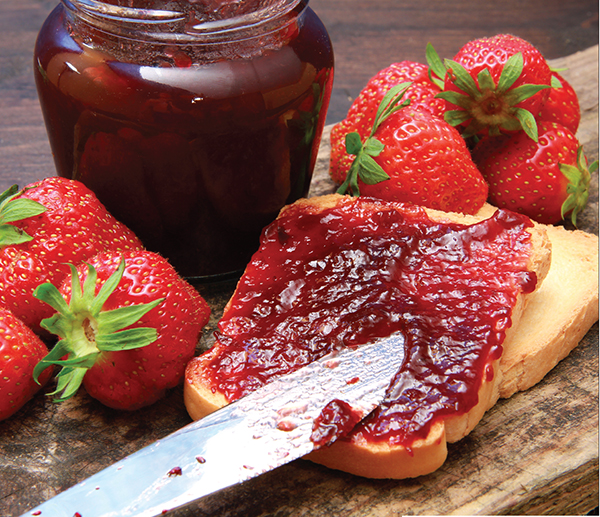
“It is not always granted to the sower to live to see the harvest. All work that is worth anything is done in faith.”
—Albert Schweitzer
“Striving for success without hard work is like trying to harvest where you haven't planted.”
—David Bly
Canning began in France, at the turn of the nineteenth century, when Napoleon Bonaparte was desperate for a way to keep his troops well fed while on the march. In 1800 he decided to hold a contest, offering 12,000 francs to anyone who could devise a suitable method of food preservation. Nicolas François Appert, a French confectioner, rose to the challenge, considering that if wine could be preserved in bottles, perhaps food could be as well. He experimented until he was able to prove that heating food to boiling after it had been sealed in airtight glass bottles prevented the food from deteriorating. Interestingly, this all took place about 100 years before Louis Pasteur found that heat could destroy bacteria. Nearly ten years after the contest began, Napoleon personally presented Nicolas with the cash reward.
Canning practices have evolved over the last two centuries, but the principles remain the same. In fact, the way we can foods today is basically the same way our grandparents and great grandparents preserved their harvests for the winter months.
On the next few pages you will find descriptions of proper canning methods, with details on how canning works and why it is both safe and economical. Much of the information here is from the USDA, which has done extensive research on home canning and preserving. If you are new to home canning, read this section carefully as it will help to ensure success with the recipes that follow.
Whether you are a seasoned home canner or this is your first foray into food preservation, it is important to follow directions carefully. With some recipes it is okay to experiment with varied proportions or added ingredients, and with others it is important to stick to what’s written. In many instances it is noted whether or not creative liberty is a good idea for a particular recipe, but if you are not sure, play it safe—otherwise you may end up with a jam that is too runny, a vegetable that is mushy, or a product that is spoiled. Take time to read the directions and prepare your foods and equipment adequately and you will find that home canning is safe, economical, tremendously satisfying, and a great deal of fun!
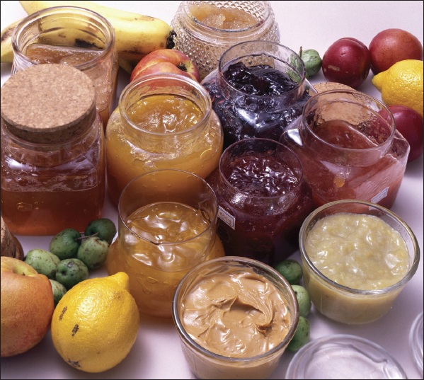
The Benefits of Canning
Canning is fun, economical, and a good way to preserve your precious produce. As more and more farmers’ markets make their way into urban centers, city dwellers are also discovering how rewarding it is to make seasonal treats last all year round. Besides the value of your labor, canning home-grown or locally grown food may save you half the cost of buying commercially canned food. Freezing food may be simpler, but most people have limited freezer space, whereas cans of food can be stored almost anywhere. And what makes a nicer, more thoughtful gift than a jar of homemade jam, tailored to match the recipient’s favorite fruits and flavors?
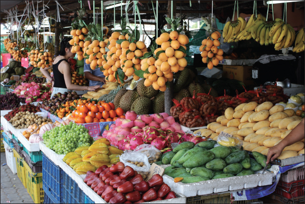
The nutritional value of home canning is an added benefit. Many vegetables begin to lose their vitamins as soon as they are harvested. Nearly half the vitamins may be lost within a few days unless the fresh produce is kept cool or preserved. Within one to two weeks, even refrigerated produce loses half or more of certain vitamins. The heating process during canning destroys from one-third to one-half of vitamins A and C, thiamin, and riboflavin. Once canned, foods may lose from 5 to 20 percent of these sensitive vitamins each year. The amounts of other vitamins, however, are only slightly lower in canned compared with fresh food. If vegetables are handled properly and canned promptly after harvest, they can be more nutritious than fresh produce sold in local stores.
The advantages of home canning are lost when you start with poor quality foods, when jars fail to seal properly, when food spoils, and when flavors, texture, color, and nutrients deteriorate during prolonged storage. The tips that follow explain many of these problems and recommend ways to minimize them.
How Canning Preserves Foods
The high percentage of water in most fresh foods makes them very perishable. They spoil or lose their quality for several reasons:
• Growth of undesirable microorganisms—bacteria, molds, and yeasts
• Activity of food enzymes
• Reactions with oxygen
• Moisture loss
Microorganisms live and multiply quickly on the surfaces of fresh food and on the inside of bruised, insect-damaged, and diseased food. Oxygen and enzymes are present throughout fresh food tissues.
Proper canning practices include:
• Carefully selecting and washing fresh food
• Peeling some fresh foods
• Hot packing many foods
• Adding acids (lemon juice, citric acid, or vinegar) to some foods
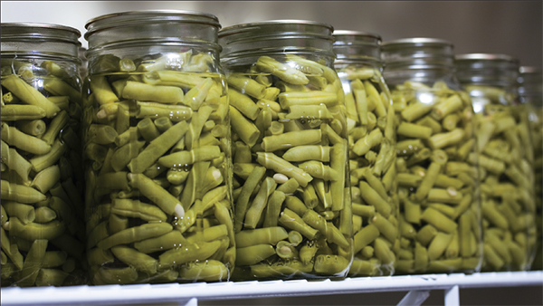
• Using acceptable jars and self-sealing lids
• Processing jars in a boiling-water or pressure canner for the correct amount of time
Collectively, these practices remove oxygen; destroy enzymes; prevent the growth of undesirable bacteria, yeasts, and molds; and help form a high vacuum in jars. High vacuums form tight seals, which keep liquid in and air and microorganisms out.
TIP
A large stockpot with a lid can be used in place of a boiling-water canner for high-acid foods like tomatoes, pickles, apples, peaches, and jams. Simply place a rack inside the pot so that the jars do not rest directly on the bottom of the pot.
Canning Glossary
Acid foods—Foods that contain enough acid to result in a pH of 4.6 or lower. Includes most tomatoes; fermented and pickled vegetables; relishes; jams, jellies, and marmalades; and all fruits except figs. Acid foods may be processed in boiling water.
Ascorbic acid—The chemical name for vitamin C; commonly used to prevent browning of peeled, light-colored fruits and vegetables.
Blancher—A 6- to 8-quart lidded pot designed with a fitted, perforated basket to hold food in boiling water or with a fitted rack to steam foods. Useful for loosening skins on fruits to be peeled or for heating foods to be hot packed.
Boiling-water canner—A large, standard-sized, lidded kettle with jar rack designed for heat-processing seven quarts or eight to nine pints in boiling water.
Botulism—An illness caused by eating a toxin produced by growth of Clostridium botulinum bacteria in moist, low-acid food containing less than 2 percent oxygen and stored between 40 and 120°F. Proper heat processing destroys this bacterium in canned food. Freezer temperatures inhibit its growth in frozen food. Low moisture controls its growth in dried food. High oxygen controls its growth in fresh foods.
Canning—A method of preserving food that employs heat processing in airtight, vacuum-sealed containers so that food can be safely stored at normal home temperatures.
Canning salt—Also called pickling salt. It is regular table salt without the anti-caking or iodine additives.
Citric acid—A form of acid that can be added to canned foods. It increases the acidity of low-acid foods and may improve their flavor.
Cold pack—Canning procedure in which jars are filled with raw food. “Raw pack” is the preferred term for describing this practice. “Cold pack” is often used incorrectly to refer to foods that are open-kettle canned or jars that are heat-processed in boiling water.
Enzymes—Proteins in food that accelerate many flavor, color, texture, and nutritional changes, especially when food is cut, sliced, crushed, bruised, or exposed to air. Proper blanching or hot-packing practices destroy enzymes and improve food quality.
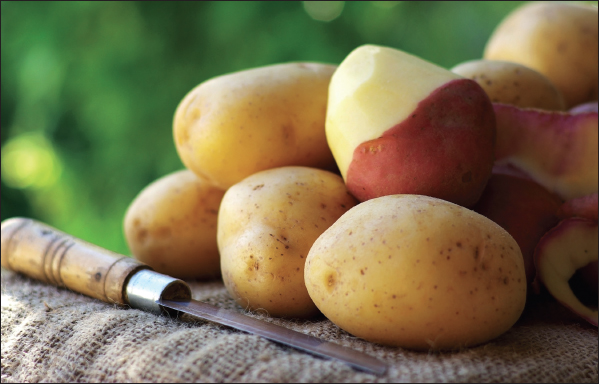
Exhausting—Removing air from within and around food and from jars and canners. Exhausting or venting of pressure canners is necessary to prevent botulism in low-acid canned foods.
Headspace—The unfilled space above food or liquid in jars that allows for food expansion as jars are heated and for forming vacuums as jars cool.
Heat processing—Treatment of jars with sufficient heat to enable storing food at normal home temperatures.
Hermetic seal—An absolutely airtight container seal that prevents reentry of air or microorganisms into packaged foods.
Hot pack—Heating of raw food in boiling water or steam and filling it hot into jars.
Low-acid foods—Foods that contain very little acid and have a pH above 4.6. The acidity in these foods is insufficient to prevent the growth of botulism bacteria. Vegetables, some varieties of tomatoes, figs, all meats, fish, seafood, and some dairy products are low-acid foods. To control all risks of botulism, jars of these foods must be either heat processed in a pressure canner or acidified to a pH of 4.6 or lower before being processed in boiling water.
Microorganisms—Independent organisms of microscopic size, including bacteria, yeast, and mold. In a suitable environment, they grow rapidly and may divide or reproduce every ten to thirty minutes. Therefore, they reach high populations very quickly. Microorganisms are sometimes intentionally added to ferment foods, make antibiotics, and for other reasons. Undesirable microorganisms cause disease and food spoilage.
Mold—A fungus-type microorganism whose growth on food is usually visible and colorful. Molds may grow on many foods, including acid foods like jams and jellies and canned fruits. Recommended heat processing and sealing practices prevent their growth on these foods.
Mycotoxins—Toxins produced by the growth of some molds on foods.
Open-kettle canning—A non-recommended canning method. Food is heat-processed in a covered kettle, filled while hot into sterile jars, and then sealed. Foods canned this way have low vacuums or too much air, which permits rapid loss of quality in foods. Also, these foods often spoil because they become recontaminated while the jars are being filled.
Pasteurization—Heating food to temperatures high enough to destroy disease-causing microorganisms.
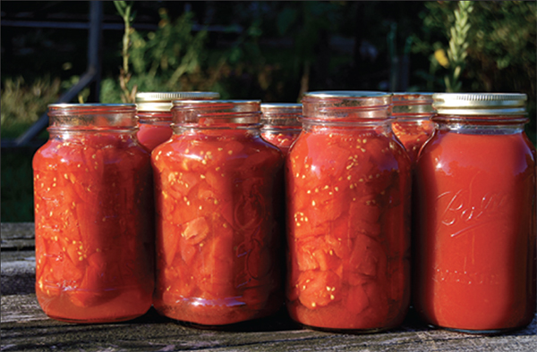
pH—A measure of acidity or alkalinity. Values range from 0 to 14. A food is neutral when its pH is 7.0. Lower values are increasingly more acidic; higher values are increasingly more alkaline.
PSIG—Pounds per square inch of pressure as measured by a gauge.
Pressure canner—A specifically designed metal kettle with a lockable lid used for heat processing low-acid food. These canners have jar racks, one or more safety devices, systems for exhausting air, and a way to measure or control pressure. Canners with 20- to 21-quart capacity are common. The minimum size of canner that should be used has a 16-quart capacity and can hold seven one-quart jars. Use of pressure saucepans with a capacity of less than 16 quarts is not recommended.
Raw pack—The practice of filling jars with raw, unheated food. Acceptable for canning low-acid foods, but allows more rapid quality losses in acid foods that are heat-processed in boiling water. Also called “cold pack.”
Style of pack—Form of canned food, such as whole, sliced, piece, juice, or sauce. The term may also be used to specify whether food is filled raw or hot into jars.
Vacuum—A state of negative pressure that reflects how thoroughly air is removed from within a jar of processed food; the higher the vacuum, the less air left in the jar.
Proper Canning Practices
Growth of the bacterium Clostridium botulinum in canned food may cause botulism—a deadly form of food poisoning. These bacteria exist either as spores or as vegetative cells. The spores, which are comparable to plant seeds, can survive harmlessly in soil and water for many years. When ideal conditions exist for growth, the spores produce vegetative cells, which multiply rapidly and may produce a deadly toxin within three to four days in an environment consisting of:
• A moist, low-acid food
• A temperature between 40 and 120°F, and
• Less than 2 percent oxygen.
Botulinum spores are on most fresh food surfaces. Because they grow only in the absence of air, they are harmless on fresh foods. Most bacteria, yeasts, and molds are difficult to remove from food surfaces. Washing fresh food reduces their numbers only slightly. Peeling root crops, underground stem crops, and tomatoes reduces their numbers greatly. Blanching also helps, but the vital controls are the method of canning and use of the recommended research-based processing times. These processing times ensure destruction of the largest expected number of heat-resistant microorganisms in home-canned foods.
Properly sterilized canned food will be free of spoilage if lids seal and jars are stored below 95°F. Storing jars at 50 to 70°F enhances retention of quality.
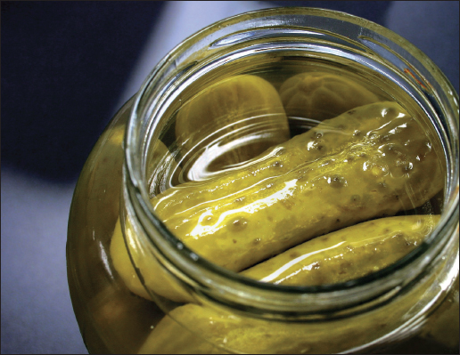
Food Acidity and Processing Methods
Whether food should be processed in a pressure canner or boiling-water canner to control botulism bacteria depends on the acidity in the food. Acidity may be natural, as in most fruits, or added, as in pickled food. Low-acid canned foods contain too little acidity to prevent the growth of these bacteria. Other foods may contain enough acidity to block their growth or to destroy them rapidly when heated. The term “pH” is a measure of acidity: the lower its value, the more acidic the food. The acidity level in foods can be increased by adding lemon juice, citric acid, or vinegar.
Low-acid foods have pH values higher than 4.6. They include red meats, seafood, poultry, milk, and all fresh vegetables except for most tomatoes. Most products that are mixtures of low-acid and acid foods also have pH values above 4.6 unless their ingredients include enough lemon juice, citric acid, or vinegar to make them acid foods. Acid foods have a pH of 4.6 or lower. They include fruits, pickles, sauerkraut, jams, jellies, marmalade, and fruit butters.
Although tomatoes usually are considered an acid food, some are now known to have pH values slightly above 4.6. Figs also have pH values slightly above 4.6. Therefore, if they are to be canned as acid foods, these products must be acidified to a pH of 4.6 or lower with lemon juice or citric acid. Properly acidified tomatoes and figs are acid foods and can be safely processed in a boiling-water canner.
Botulinum spores are very hard to destroy at boiling-water temperatures; the higher the canner temperature, the more easily they are destroyed. Therefore, all low-acid foods should be sterilized at temperatures of 240 to 250°F, attainable with pressure canners operated at 10 to 15 PSIG. (PSIG means pounds per square inch of pressure as measured by a gauge.) At these temperatures, the time needed to destroy bacteria in low-acid canned foods ranges from twenty to 100 minutes. The exact time depends on the kind of food being canned, the way it is packed into jars, and the size of jars. The time needed to safely process low-acid foods in boiling water ranges from seven to eleven hours; the time needed to process acid foods in boiling water varies from five to eighty-five minutes.
Know Your Altitude
It is important to know your approximate elevation or altitude above sea level in order to determine a safe processing time for canned foods. Since the boiling temperature of liquid is lower at higher elevations, it is critical that additional time be given for the safe processing of foods at altitudes above sea level.
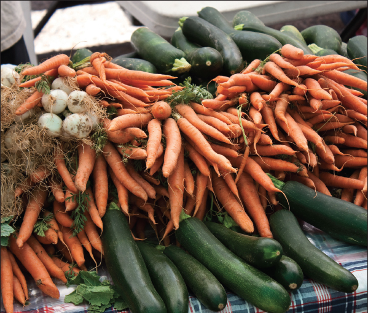
What Not to Do
Open-kettle canning and the processing of freshly filled jars in conventional ovens, microwave ovens, and dishwashers are not recommended because these practices do not prevent all risks of spoilage. Steam canners are not recommended because processing times for use with current models have not been adequately researched. Because steam canners may not heat foods in the same manner as boiling-water canners, their use with boiling-water processing times may result in spoilage. So-called canning powders are useless as preservatives and do not replace the need for proper heat processing.
It is not recommended that pressures in excess of 15 PSIG be applied when using new pressure-canning equipment.
Ensuring High-Quality Canned Foods
Examine food carefully for freshness and wholesomeness. Discard diseased and moldy food. Trim small diseased lesions or spots from food.
Can fruits and vegetables picked from your garden or purchased from nearby producers when the products are at their peak of quality—within six to twelve hours after harvest for most vegetables. However, apricots, nectarines, peaches, pears, and plums should be ripened one or more days between harvest and canning. If you must delay the canning of other fresh produce, keep it in a shady, cool place.
Fresh, home-slaughtered red meats and poultry should be chilled and canned without delay. Do not can meat from sickly or diseased animals. Put fish and seafood on ice after harvest, eviscerate immediately, and can them within two days.
Maintaining Color and Flavor in Canned Food
To maintain good natural color and flavor in stored canned food, you must:
• Remove oxygen from food tissues and jars
• Quickly destroy the food enzymes, and
• Obtain high jar vacuums and airtight jar seals.
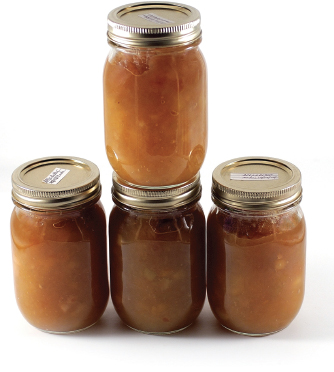
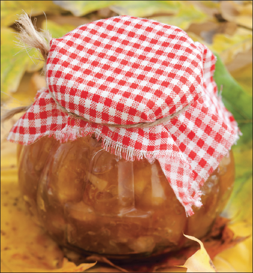
Follow these guidelines to ensure that your canned foods retain optimal colors and flavors during processing and storage:
• Use only high-quality foods that are at the proper maturity and are free of diseases and bruises
• Use the hot-pack method, especially with acid foods to be processed in boiling water
• Don’t unnecessarily expose prepared foods to air; can them as soon as possible
• While preparing a canner load of jars, keep peeled, halved, quartered, sliced or diced apples, apricots, nectarines, peaches, and pears in a solution of 3 grams (3,000 milligrams) ascorbic acid to 1 gallon of cold water. This procedure is also useful in maintaining the natural color of mushrooms and potatoes and for preventing stem-end discoloration in cherries and grapes.
You can get ascorbic acid in several forms:
Pure powdered form—Seasonally available among canning supplies in supermarkets. One level teaspoon of pure powder weighs about 3 grams. Use 1 teaspoon per gallon of water as a treatment solution.
Vitamin C tablets—Economical and available year-round in many stores. Buy 500-milligram tablets; crush and dissolve six tablets per gallon of water as a treatment solution.
Commercially prepared mixes of ascorbic and citric acid—Seasonally available among canning supplies in supermarkets. Sometimes citric acid powder is sold in supermarkets, but it is less effective in controlling discoloration. If you choose to use these products, follow the manufacturer’s directions.
• Fill hot foods into jars and adjust headspace as specified in recipes
• Tighten screw bands securely, but if you are especially strong, not as tightly as possible
• Process and cool jars
• Store the jars in a relatively cool, dark place, preferably between 50 and 70°F
• Can no more food than you will use within a year.
Advantages of Hot Packing
Many fresh foods contain from 10 percent to more than 30 percent air. The length of time that food will last at premium quality depends on how much air is removed from the food before jars are sealed. The more air that is removed, the higher the quality of the canned product.
Raw packing is the practice of filling jars tightly with freshly prepared but unheated food. Such foods, especially fruit, will float in the jars. The entrapped air in and around the food may cause discoloration within two to three months of storage. Raw-packing is more suitable for vegetables processed in a pressure canner.
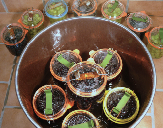
Hot packing is the practice of heating freshly prepared food to boiling, simmering it three to five minutes, and promptly filling jars loosely with the boiled food. Hot packing is the best way to remove air and is the preferred pack style for foods processed in a boiling-water canner. At first, the color of hot-packed foods may appear no better than that of raw-packed foods, but within a short storage period both color and flavor of hot-packed foods will be superior.
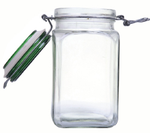
Whether food has been hot packed or raw packed, the juice, syrup, or water to be added to the foods should be heated to boiling before it is added to the jars. This practice helps to remove air from food tissues, shrinks food, helps keep the food from floating in the jars, increases vacuum in sealed jars, and improves shelf life. Preshrinking food allows you to add more food to each jar.
Controlling Headspace
The unfilled space above the food in a jar and below its lid is termed headspace. It is best to leave a ¼-inch headspace for jams and jellies, ½-inch for fruits and tomatoes to be processed in boiling water, and from 1 to 1¼ inches in low-acid foods to be processed in a pressure canner.
This space is needed for expansion of food as jars are processed and for forming vacuums in cooled jars. The extent of expansion is determined by the air content in the food and by the processing temperature. Air expands greatly when heated to high temperatures—the higher the temperature, the greater the expansion. Foods expand less than air when heated.
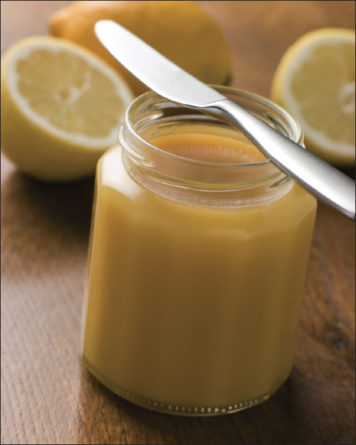
Jars and Lids
Food may be canned in glass jars or metal containers. Metal containers can be used only once. They require special sealing equipment and are much more costly than jars.
Mason-type jars designed for home canning are ideal for preserving food by pressure or boiling-water canning. Regular and wide-mouthed threaded mason jars with self-sealing lids are the best choices. They are available in half-pint, pint, 1½-pint, and quart sizes. The standard jar mouth opening is about 2 ⅜ inches. Wide-mouthed jars have openings of about 3 inches, making them more easily filled and emptied. Regular-mouth decorative jelly jars are available in eight-ounce and 12-ounce sizes.
With careful use and handling, mason jars may be reused many times, requiring only new lids each time. When lids are used properly, jar seals and vacuums are excellent.
Jar Cleaning
Before reuse, wash empty jars in hot water with detergent and rinse well by hand, or wash in a dishwasher. Rinse thoroughly, as detergent residue may cause unnatural flavors and colors. Scale or hard-water films on jars are easily removed by soaking jars several hours in a solution containing 1 cup of vinegar (5 percent acid) per gallon of water.
Sterilization of Empty Jars
Use sterile jars for all jams, jellies, and pickled products processed less than ten minutes. To sterilize empty jars, put them right side up on the rack in a boiling-water canner. Fill the canner and jars with hot (not boiling) water to 1 inch above the tops of the jars. Boil ten minutes. Remove and drain hot sterilized jars one at a time. Save the hot water for processing filled jars. Fill jars with food, add lids, and tighten screw bands.
Empty jars used for vegetables, meats, and fruits to be processed in a pressure canner need not be sterilized beforehand. It is also unnecessary to sterilize jars for fruits, tomatoes, and pickled or fermented foods that will be processed ten minutes or longer in a boiling-water canner.
Lid Selection, Preparation, and Use
The common self-sealing lid consists of a flat metal lid held in place by a metal screw band during processing. The flat lid is crimped around its bottom edge to form a trough, which is filled with a colored gasket material. When jars are processed, the lid gasket softens and flows slightly to cover the jar-sealing surface, yet allows air to escape from the jar. The gasket then forms an airtight seal as the jar cools. Gaskets in unused lids work well for at least five years from date of manufacture. The gasket material in older unused lids may fail to seal on jars.
It is best to buy only the quantity of lids you will use in a year. To ensure a good seal, carefully follow the manufacturer’s directions in preparing lids for use. Examine all metal lids carefully. Do not use old, dented, or deformed lids or lids with gaps or other defects in the sealing gasket.
After filling jars with food, release air bubbles by inserting a flat plastic (not metal) spatula between the food and the jar. Slowly turn the jar and move the spatula up and down to allow air bubbles to escape. Adjust the headspace and then clean the jar rim (sealing surface) with a dampened paper towel. Place the lid, gasket down, onto the cleaned jar-sealing surface. Uncleaned jar-sealing surfaces may cause seal failures.
Then fit the metal screw band over the flat lid. Follow the manufacturer’s guidelines enclosed with or on the box for tightening the jar lids properly.
• If screw bands are too tight, air cannot vent during processing, and food will discolor during storage. Overtightening also may cause lids to buckle and jars to break, especially with raw-packed, pressure-processed food.
• If screw bands are too loose, liquid may escape from jars during processing, seals may fail, and the food will need to be reprocessed.
Do not retighten lids after processing jars. As jars cool, the contents in the jar contract, pulling the self-sealing lid firmly against the jar to form a high vacuum. Screw bands are not needed on stored jars. They can be removed easily after jars are cooled. When removed, washed, dried, and stored in a dry area, screw bands may be used many times. If left on stored jars, they become difficult to remove, often rust, and may not work properly again.
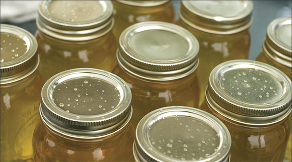
Selecting the Correct Processing Time
When food is canned in boiling water, more processing time is needed for most raw-packed foods and for quart jars than is needed for hot-packed foods and pint jars.
To destroy microorganisms in acid foods processed in a boiling-water canner, you must:
• Process jars for the correct number of minutes in boiling water;
• Cool the jars at room temperature.
To destroy microorganisms in low-acid foods processed with a pressure canner, you must:
• Process the jars for the correct number of minutes at 240°F (10 PSIG) or 250°F (15 PSIG);
• Allow canner to cool at room temperature until it is completely depressurized.
The food may spoil if you fail to use the proper processing times, fail to vent steam from canners properly, process at lower pressure than specified, process for fewer minutes than specified, or cool the canner with water.
Processing times for haft-pint and pint jars are the same, as are times for 1 ½-pint and quart jars. For some products, you have a choice of processing at 5, 10, or 15 PSIG. In these cases, choose the canner pressure (PSIG) you wish to use and match it with your pack style (raw or hot) and jar size to find the correct processing time.
Recommended Canners
There are two main types of canners for heat-processing home-canned food: boiling-water canners and pressure canners. Most are designed to hold seven one-quart jars or eight to nine one-pint jars. Small pressure canners hold four one-quart jars; some large pressure canners hold eighteen 1-pint jars in two layers but hold only seven quart jars. Pressure saucepans with smaller volume capacities are not recommended for use in canning. Treat small pressure canners the same as standard larger canners; they should be vented using the typical venting procedures.
Low-acid foods must be processed in a pressure canner to be free of botulism risks. Although pressure canners also may be used for processing acid foods, boiling-water canners are recommended because they are faster. A pressure canner would require from fifty-five to 100 minutes to can a load of jars; the total time for canning most acid foods in boiling water varies from twenty-five to sixty minutes.
A boiling-water canner loaded with filled jars requires about twenty to thirty minutes of heating before its water begins to boil. A loaded pressure canner requires about twelve to fifteen minutes of heating before it begins to vent, another ten minutes to vent the canner, another five minutes to pressurize the canner, another eight to ten minutes to process the acid food, and, finally, another twenty to sixty minutes to cool the canner before removing jars.
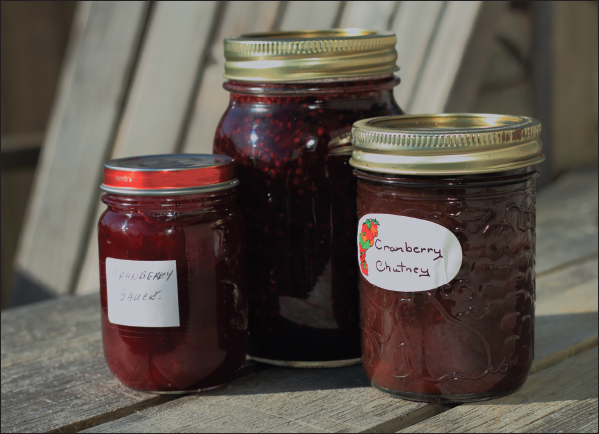
Boiling-Water Canners
These canners are made of aluminum or porcelain-covered steel. They have removable perforated racks and fitted lids. The canner must be deep enough so that at least 1 inch of briskly boiling water will cover the tops of jars during processing. Some boiling-water canners do not have flat bottoms. A flat bottom must be used on an electric range. Either a flat or ridged bottom can be used on a gas burner. To ensure uniform processing of all jars with an electric range, the canner should be no more than 4 inches wider in diameter than the element on which it is heated.
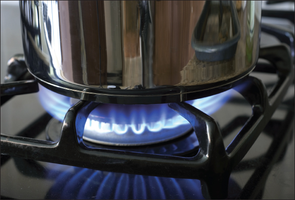
Using a Boiling-Water Canner
Follow these steps for successful boiling-water canning:
1. Fill the canner halfway with water.
2. Preheat water to 140°F for raw-packed foods and to 180°F for hot-packed foods.
3. Load filled jars, fitted with lids, into the canner rack and use the handles to lower the rack into the water; or fill the canner, one jar at a time, with a jar lifter.
4. Add more boiling water, if needed, so the water level is at least 1 inch above jar tops.
5. Turn heat to its highest position until water boils vigorously.
6. Set a timer for the minutes required for processing the food.
7. Cover with the canner lid and lower the heat setting to maintain a gentle boil throughout the processing time.
8. Add more boiling water, if needed, to keep the water level above the jars.
9. When jars have been boiled for the recommended time, turn off the heat and remove the canner lid.
10. Using a jar lifter, remove the jars and place them on a towel, leaving at least 1 inch of space between the jars during cooling.
Pressure Canners
Pressure canners for use in the home have been extensively redesigned in recent years. Models made before the 1970s were heavy-walled kettles with clamp-on lids. They were fitted with a dial gauge, a vent port in the form of a petcock or counterweight, and a safety fuse. Modern pressure canners are lightweight, thin-walled kettles; most have turn-on lids. They have a jar rack, gasket, dial or weighted gauge, an automatic vent or cover lock, a vent port (steam vent) that is closed with a counterweight or weighted gauge, and a safety fuse.
Pressure does not destroy microorganisms, but high temperatures applied for a certain period of time do. The success of destroying all microorganisms capable of growing in canned food is based on the temperature obtained in pure steam, free of air, at sea level. At sea level, a canner operated at a gauge pressure of 10 pounds provides an internal temperature of 240°F.
Air trapped in a canner lowers the inside temperature and results in under-processing. The highest volume of air trapped in a canner occurs in processing raw-packed foods in dial-gauge canners. These canners do not vent air during processing. To be safe, all types of pressure canners must be vented ten minutes before they are pressurized.
To vent a canner, leave the vent port uncovered on newer models or manually open petcocks on some older models. Heating the filled canner with its lid locked into place boils water and generates steam that escapes through the petcock or vent port. When steam first escapes, set a timer for ten minutes. After venting ten minutes, close the petcock or place the counterweight or weighted gauge over the vent port to pressurize the canner.
Weighted-gauge models exhaust tiny amounts of air and steam each time their gauge rocks or jiggles during processing. The sound of the weight rocking or jiggling indicates that the canner is maintaining the recommended pressure and needs no further attention until the load has been processed for the set time. Weighted-gauge canners cannot correct precisely for higher altitudes, and at altitudes above 1,000 feet must be operated at a pressure of 15.
Check dial gauges for accuracy before use each year and replace if they read high by more than 1 pound at 5, 10, or 15 pounds of pressure. Low readings cause over-processing and may indicate that the accuracy of the gauge is unpredictable. If a gauge is consistently low, you may adjust the processing pressure. For example, if the directions call for 12 pounds of pressure and your dial gauge has tested 1 pound low, you can safely process at 11 pounds of pressure. If the gauge is more than 2 pounds low, it is unpredictable, and it is best to replace it. Gauges may be checked at most USDA county extension offices, which are located in every state across the country. To find one near you, visit www.csrees.usda.gov.
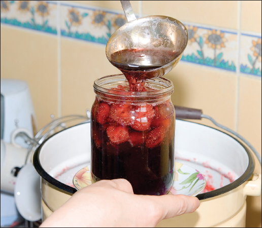
Handle gaskets of canner lids carefully and clean them according to the manufacturer’s directions. Nicked or dried gaskets will allow steam leaks during pressurization of canners. Gaskets of older canners may need to be lightly coated with vegetable oil once per year, but newer models are pre-lubricated. Check your canner’s instructions.
Lid safety fuses are thin metal inserts or rubber plugs designed to relieve excessive pressure from the canner. Do not pick at or scratch fuses while cleaning lids. Use only canners that have Underwriter’s Laboratory (UL) approval to ensure their safety.
Replacement gauges and other parts for canners are often available at stores offering canner equipment or from canner manufacturers. To order parts, list canner model number and describe the parts needed.
Using a Pressure Canner
Follow these steps for successful pressure canning:
1. Put 2 to 3 inches of hot water in the canner. Place filled jars on the rack, using a jar lifter. Fasten canner lid securely.
2. Open petcock or leave weight off vent port. Heat at the highest setting until steam flows from the petcock or vent port.
3. Maintain high heat setting, exhaust steam ten minutes, and then place weight on vent port or close petcock. The canner will pressurize during the next three to five minutes.
4. Start timing the process when the pressure reading on the dial gauge indicates that the recommended pressure has been reached or when the weighted gauge begins to jiggle or rock.
5. Regulate heat under the canner to maintain a steady pressure at or slightly above the correct gauge pressure. Quick and large pressure variations during processing may cause unnecessary liquid losses from jars. Weighted gauges on Mirro canners should jiggle about two or three times per minute. On Presto canners, they should rock slowly throughout the process.
When processing time is completed, turn off the heat, remove the canner from heat if possible, and let the canner depressurize. Do not force-cool the canner. If you cool it with cold running water in a sink or open the vent port before the canner depressurizes by itself, liquid will spurt from jars, causing low liquid levels and jar seal failures. Force-cooling also may warp the canner lid of older model canners, causing steam leaks.
Depressurization of older models should be timed. Standard size heavy-walled canners require about thirty minutes when loaded with pints and forty-five minutes with quarts. Newer thin-walled canners cool more rapidly and are equipped with vent locks. These canners are depressurized when their vent lock piston drops to a normal position.
1. After the vent port or petcock has been open for two minutes, unfasten the lid and carefully remove it. Lift the lid away from you so that the steam does not burn your face.
2. Remove jars with a lifter, and place on towel or cooling rack, if desired.
Cooling Jars
Cool the jars at room temperature for twelve to twenty-four hours. Jars may be cooled on racks or towels to minimize heat damage to counters. The food level and liquid volume of raw-packed jars will be noticeably lower after cooling because air is exhausted during processing and food shrinks. If a jar loses excessive liquid during processing, do not open it to add more liquid. As long as the seal is good, the product is still usable.
Testing jar seals.
Testing Jar Seals
After cooling jars for twelve to twenty-four hours, remove the screw bands and test seals with one of the following methods:
Method 1: Press the middle of the lid with a finger or thumb. If the lid springs up when you release your finger, the lid is unsealed and reprocessing will be necessary.
Method 2: Tap the lid with the bottom of a teaspoon. If it makes a dull sound, the lid is not sealed. If food is in contact with the underside of the lid, it will also cause a dull sound. If the jar lid is sealed correctly, it will make a ringing, high-pitched sound.
Method 3: Hold the jar at eye level and look across the lid. The lid should be concave (curved down slightly in the center). If center of the lid is either flat or bulging, it may not be sealed.
Reprocessing Unsealed Jars
If a jar fails to seal, remove the lid and check the jar-sealing surface for tiny nicks. If necessary, change the jar, add a new, properly prepared lid, and reprocess within twenty-four hours using the same processing time.
Another option is to adjust headspace in unsealed jars to 1½ inches and freeze jars and contents instead of reprocessing. However, make sure jars have straight sides. Freezing may crack jars with “shoulders.”
Foods in single unsealed jars could be stored in the refrigerator and consumed within several days.
Storing Canned Foods
If lids are tightly vacuum-sealed on cooled jars, remove screw bands, wash the lid and jar to remove food residue, then rinse and dry jars. Label and date the jars and store them in a clean, cool, dark, dry place. Do not store jars at temperatures above 95°F or near hot pipes, a range, a furnace, in an un-insulated attic, or in direct sunlight. Under these conditions, food will lose quality in a few weeks or months and may spoil. Dampness may corrode metal lids, break seals, and allow recontamination and spoilage.
Accidental freezing of canned foods will not cause spoilage unless jars become unsealed and re-contaminated. However, freezing and thawing may soften food. If jars must be stored where they may freeze, wrap them in newspapers, place them in heavy cartons, and cover them with more newspapers and blankets.
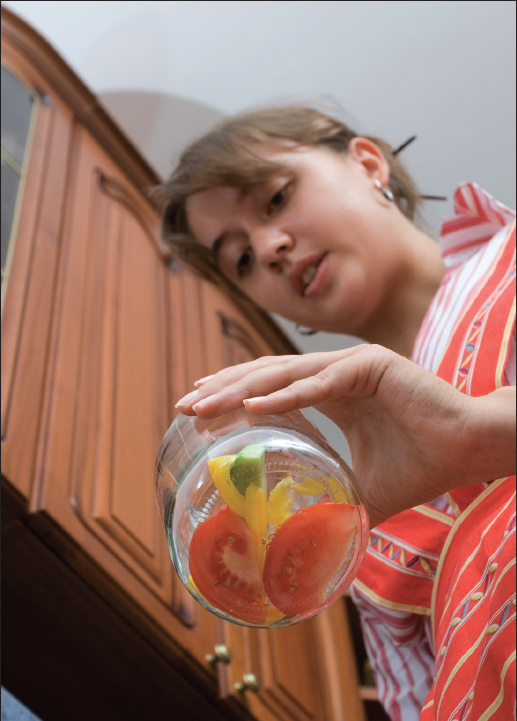
Identifying and Handling Spoiled Canned Food
Growth of spoilage bacteria and yeast produces gas, which pressurizes the food, swells lids, and breaks jar seals. As each stored jar is selected for use, examine its lid for tightness and vacuum. Lids with concave centers have good seals.
Next, while holding the jar upright at eye level, rotate the jar and examine its outside surface for streaks of dried food originating at the top of the jar. Look at the contents for rising air bubbles and unnatural color.
While opening the jar, smell for unnatural odors and look for spurting liquid and cotton-like mold growth (white, blue, black, or green) on the top food surface and underside of lid. Do not taste food from a stored jar you discover to have an unsealed lid or that otherwise shows signs of spoilage.
All suspect containers of spoiled low-acid foods should be treated as having produced botulinum toxin and should be handled carefully as follows:
• If the suspect glass jars are unsealed, open, or leaking, they should be detoxified before disposal.
• If the suspect glass jars are sealed, remove lids and detoxify the entire jar, contents, and lids.
Detoxification Process
Carefully place the suspect containers and lids on their sides in an eight-quart-volume or larger stockpot, pan, or boiling-water canner. Wash your hands thoroughly. Carefully add water to the pot. The water should completely cover the containers with a minimum of 1 inch of water above the containers. Avoid splashing the water. Place a lid on the pot and heat the water to boiling. Boil thirty minutes to ensure detoxifying the food and all container components. Cool and discard lids and food in the trash or bury in the soil.
Thoroughly clean all counters, containers, and equipment including can opener, clothing, and hands that may have come in contact with the food or the containers. Discard any sponges or washcloths that were used in the cleanup. Place them in a plastic bag and discard in the trash.
Canned Foods for Special Diets
The cost of commercially canned special diet food often prompts interest in preparing these products at home. Some low-sugar and low-salt foods may be easily and safely canned at home. However, it may take some experimentation to create a product with the desired color, flavor, and texture. Start with a small batch and then make appropriate adjustments before producing large quantities.
How much should you can?
The amount of food to preserve for your family, either by canning or freezing, should be based on individual choices. The following table can serve as a worksheet to plan how much food you should can for use within a year.
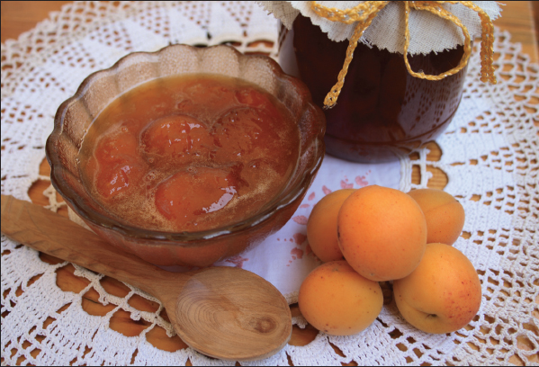
PROCESS TIMES FOR FRUITS AND FRUIT PRODUCTS IN A DIAL-GAUGE PRESSURE CANNER*
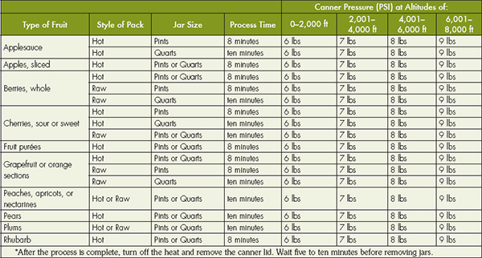
Fruit
There’s nothing quite like opening a jar of home- preserved strawberries in the middle of a winter snowstorm. It takes you right back to the warm early-summer sunshine, the smell of the strawberry patch’s damp earth, and the feel of the firm berries as you snipped them from the vines. Best of all, you get to indulge in the sweet, summery flavor even as the snow swirls outside the windows.
Preserving fruit is simple, safe, and it allows you to enjoy the fruits of your summer’s labor all year round. On the next pages you will find reference charts for processing various fruits and fruit products in a dial-gauge pressure canner or a weighted-gauge pressure canner. The same information is also included with each recipe’s directions. In some cases a boiling-water canner will serve better; for these instances, directions for its use are offered instead.
Adding syrup to canned fruit helps to retain its flavor, color, and shape, although it does not prevent spoilage. To maintain the most natural flavor, use the Very Light Syrup listed in the table found on page 181. Many fruits that are typically packed in heavy syrup are just as good—and a lot better for you—when packed in lighter syrups. However, if you’re preserving fruit that’s on the sour side, like cherries or tart apples, you might want to splurge on one of the sweeter versions.
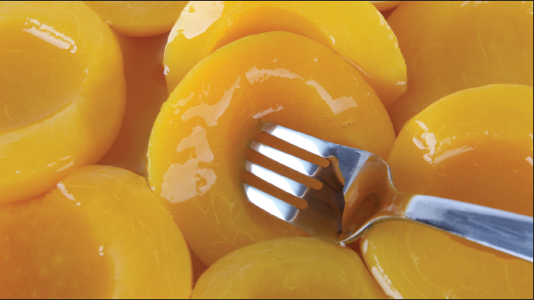
Syrups
Adding syrup to canned fruit helps to retain its flavor, color, and shape, although jars still need to be processed to prevent spoilage. Follow the chart below for syrups of varying sweetness. Light corn syrups or mild-flavored honey may be used to replace up to half the table sugar called for in syrups.
For hot packs, bring water and sugar to a boil, add fruit, reheat to a boil, and fill into jars immediately.
PROCESS TIMES FOR FRUITS AND FRUIT PRODUCTS IN A WEIGHTED-GAUGE PRESSURE CANNER*
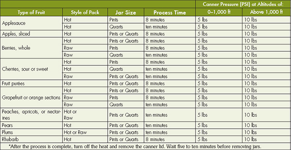
SUGAR AND WATER IN SYRUP
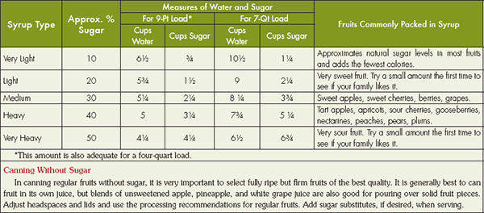
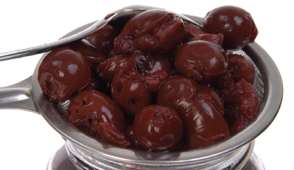
PROCESS TIMES FOR APPLE JUICE IN A BOILING-WATER CANNER*
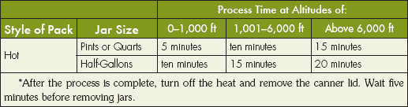
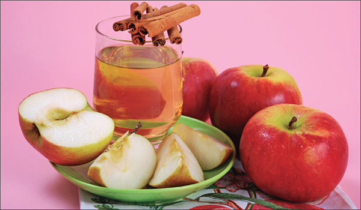
Directions
1. Bring water and sugar to a boil in a medium saucepan.
2. Pour over raw fruits in jars.
Apple Juice
The best apple juice is made from a blend of varieties. If you don’t have your own apple press, try to buy fresh juice from a local cider maker within twenty-four hours after it has been pressed.
Directions
1. Refrigerate juice for twenty-four to forty-eight hours.
2. Without mixing, carefully pour off clear liquid and discard sediment. Strain the clear liquid through a paper coffee filter or double layers of damp cheesecloth.
3. Heat quickly in a saucepan, stirring occasionally, until juice begins to boil.
4. Fill immediately into sterile pint or quart jars or into clean half-gallon jars, leaving ¼-inch headspace.
5. Adjust lids and process. See below for recommended times for a boiling-water canner.
PROCESS TIMES FOR APPLE BUTTER IN A BOILING-WATER CANNER*
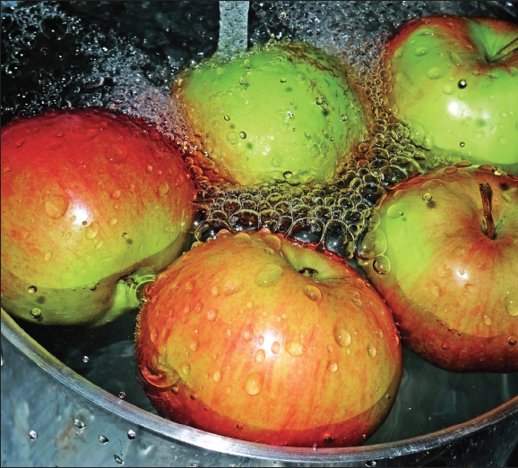
Apple Butter
The best apple varieties to use for apple butter include Jonathan, Winesap, Stayman, Golden Delicious, and Macintosh apples, but any of your favorite varieties will work. Don’t bother to peel the apples, as you will strain the fruit before cooking it anyway. This recipe will yield eight to nine pints.
Ingredients
• 8 lbs. apples
• 2 cups cider
• 2 cups vinegar
• 2¼ cups white sugar
• 2¼ cups packed brown sugar
• 2 tbsp. ground cinnamon
• 1 tbsp. ground cloves
Directions
1. Wash, stem, quarter, and core apples.
2. Cook slowly in cider and vinegar until soft. Press fruit through a colander, food mill, or strainer.
3. Cook fruit pulp with sugar and spices, stirring frequently. To test for doneness, remove a spoonful and hold it away from steam for 2 minutes. If the butter remains mounded on the spoon, it is done. If you’re still not sure, spoon a small quantity onto a plate. When a rim of liquid does not separate around the edge of the butter, it is ready for canning.
4. Fill hot into sterile half-pint or pint jars, leaving ¼-inch headspace. Quart jars need not be pre-sterilized.
Applesauce
Besides being delicious on its own or paired with dishes like pork chops or latkes, applesauce can be used as a butter substitute in many baked goods. Select apples that are sweet, juicy, and crisp. For a tart flavor, add one to two pounds of tart apples to each three pounds of sweeter fruit.
Directions
1. Wash, peel, and core apples. Slice apples into water containing a little lemon juice to prevent browning.
2. Place drained slices in an 8- to 10-quart pot. Add ½ cup water. Stirring occasionally to prevent burning, heat quickly until tender (5 to 20 minutes, depending on maturity and variety).
PROCESS TIMES FOR APPLESAUCE IN A BOILING-WATER CANNER*
PROCESS TIMES FOR APPLESAUCE IN A DIAL-GAUGE PRESSURE CANNER*
PROCESS TIMES FOR APPLESAUCE IN A WEIGHTED-GAUGE PRESSURE CANNER*
3. Press through a sieve or food mill, or skip the pressing step if you prefer chunky-style sauce. Sauce may be packed without sugar, but if desired, sweeten to taste (start with ⅛ cup sugar per quart of sauce).
4. Reheat sauce to boiling. Fill jars with hot sauce, leaving ½-inch headspace. Adjust lids and process.
Spiced Apple Rings
• 12 lbs. firm tart apples (maximum diameter 2-½ inches)
• 12 cups sugar
• 6 cups water
• 1¼ cups white vinegar (5%)
• 3 tbsp whole cloves
• ¾ cup red hot cinnamon candies or 8 cinnamon sticks
• 1 tsp red food coloring (optional)
Yield: About 8 to 9 pints
Directions
1. Wash apples. To prevent discoloration, peel and slice one apple at a time. Immediately cut crosswise into ½-inch slices, remove core area with a melon baller and immerse in ascorbic acid solution.
QUANTITY
1. An average of 21 pounds of apples is needed per canner load of seven quarts.
2. An average of 13½ pounds of apples is needed per canner load of nine pints.
3. A bushel weighs 48 pounds and yields 14 to 19 quarts of sauce—an average of three pounds per quart.
2. To make flavored syrup, combine sugar water, vinegar, cloves, cinnamon candies, or cinnamon sticks and food coloring in a 6-qt saucepan. Stir, heat to boil, and simmer 3 minutes.
3. Drain apples, add to hot syrup, and cook 5 minutes. Fill jars (preferably wide-mouth) with apple rings and hot flavored syrup, leaving ½-inch headspace. Adjust lids and process according to the chart below.
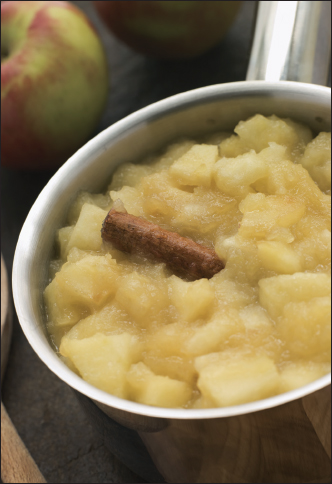
PROCESS TIME FOR SPICED APPLE RINGS IN A BOILING-WATER CANNER.
Apricots are excellent in baked goods, stuffing, chutney, or on their own. Choose firm, well-colored mature fruit for best results.
Directions
1. Dip fruit in boiling water for 30 to 60 seconds until skins loosen. Dip quickly in cold water and slip off skins.
2. Cut in half, remove pits, and slice if desired. To prevent darkening, keep peeled fruit in water with a little lemon juice.
3. Prepare and boil a very light, light, or medium syrup (see page 181) or pack apricots in water, apple juice, or white grape juice.
QUANTITY
• An average of 16 pounds is needed per canner load of seven quarts.
• An average of 10 pounds is needed per canner load of nine pints.
• A bushel weighs 50 pounds and yields 20 to 25 quarts—an average of 2¼ pounds per quart.
Berries, Whole
Preserved berries are perfect for use in pies, muffins, pancakes, or in poultry or pork dressings. Nearly every berry preserves well, including blackberries, blueberries, currants, dewberries, elderberries, gooseberries, huckleberries, loganberries, mulberries, and raspberries. Choose ripe, sweet berries with uniform color.
Directions
1. Wash 1 or 2 quarts of berries at a time. Drain, cap, and stem if necessary. For gooseberries, snip off heads and tails with scissors.
2. Prepare and boil preferred syrup, if desired (see page 181). Add ½ cup syrup, juice, or water to each clean jar.
PROCESS TIMES FOR HALVED OR SLICED APRICOTS IN A DIAL-GAUGE PRESSURE CANNER*
PROCESS TIMES FOR HALVED OR SLICED APRICOTS IN A WEIGHTED-GAUGE PRESSURE CANNER*
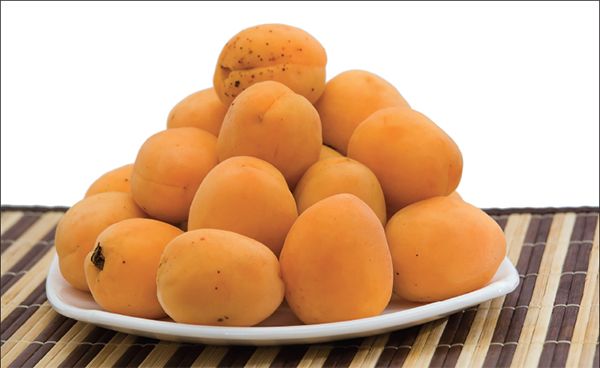
RECOMMENDED PROCESS TIMES FOR WHOLE BERRIES IN A BOILING-WATER CANNER*
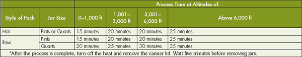
QUANTITY
• An average of 12 pounds is needed per canner load of seven quarts.
• An average of 8 pounds is needed per canner load of nine pints.
• A 24-quart crate weighs 36 pounds and yields 18 to 24 quarts—an average of 1¾ pounds per quart.
PROCESS TIMES FOR WHOLE BERRIES IN A DIAL-GAUGE PRESSURE CANNER*
PROCESS TIMES FOR WHOLE BERRIES IN A WEIGHTED-GAUGE PRESSURE CANNER*
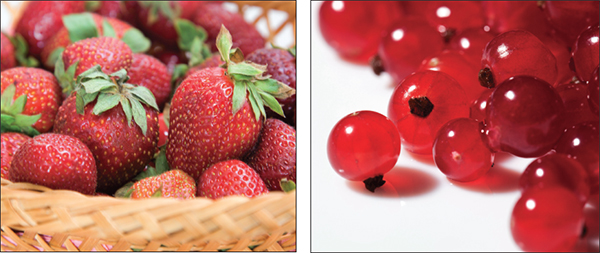
PROCESS TIMES FOR BERRY SYRUP IN A BOILING-WATER CANNER*
To make syrup with whole berries, rather than crushed, save 1 or 2 cups of the fresh or frozen fruit, combine these with the sugar, and simmer until soft. Remove from heat, skim off foam, and fill into clean jars, following processing directions for regular berry syrup.
Hot pack—(Best for blueberries, currants, elderberries, gooseberries, and huckleberries) Heat berries in boiling water for thirty seconds and drain. Fill jars and cover with hot juice, leaving ½-inch headspace.
Raw pack—Fill jars with any of the raw berries, shaking down gently while filling. Cover with hot syrup, juice, or water, leaving ½-inch headspace.
Berry Syrup
Juices from fresh or frozen blueberries, cherries, grapes, raspberries (black or red), and strawberries are easily made into toppings for use on ice cream and pastries. For an elegant finish to cheesecakes or pound cakes, drizzle a thin stream in a zigzag across the top just before serving. Berry syrups are also great additions to smoothies or milkshakes. This recipe makes about nine half-pints.
Directions
1. Select 6½ cups of fresh or frozen berries of your choice. Wash, cap, and stem berries and crush in a saucepan.
2. Heat to boiling and simmer until soft (5 to ten minutes). Strain hot through a colander placed in a large pan and drain until cool enough to handle.
3. Strain the collected juice through a double layer of cheesecloth or jelly bag. Discard the dry pulp. The yield of the pressed juice should be about 4½ to 5 cups.
4. Combine the juice with 6¾ cups of sugar in a large saucepan, bring to a boil, and simmer 1 minute.
5. Fill into clean half-pint or pint jars, leaving ½-inch headspace. Adjust lids and process.
Fruit Purées
Almost any fruit can be puréed for use as baby food, in sauces, or just as a nutritious snack. Puréed prunes and apples can be used as a butter replacement in many baked goods. Use this recipe for any fruit except figs and tomatoes.
Directions
1. Stem, wash, drain, peel, and remove pits if necessary. Measure fruit into large saucepan, crushing slightly if desired.
2. Add 1 cup hot water for each quart of fruit. Cook slowly until fruit is soft, stirring frequently. Press through sieve or food mill. If desired, add sugar to taste.
3. Reheat pulp to boil, or until sugar dissolves (if added). Fill hot into clean jars, leaving ¼-inch headspace. Adjust lids and process.
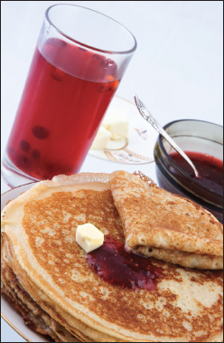
PROCESS TIMES FOR FRUIT PURÉES IN A BOILING-WATER CANNER*
PROCESS TIMES FOR FRUIT PURÉES IN A DIAL-GAUGE PRESSURE CANNER*
PROCESS TIMES FOR FRUIT PURÉES IN A WEIGHTED-GAUGE PRESSURE CANNER*
Grape Juice
Purple grapes are full of antioxidants and help to reduce the risk of heart disease, cancer, and Alzheimer’s disease. For juice, select sweet, well-colored, firm, mature fruit.
Directions
1. Wash and stem grapes. Place grapes in a saucepan and add boiling water to cover. Heat and simmer slowly until skin is soft.
2. Strain through a damp jelly bag or double layers of cheesecloth, and discard solids. Refrigerate juice for 24 to 48 hours.
3. Without mixing, carefully pour off clear liquid and save; discard sediment. If desired, strain through a paper coffee filter for a clearer juice.
4. Add juice to a saucepan and sweeten to taste. Heat and stir until sugar is dissolved. Continue heating with occasional stirring until juice begins to boil. Fill into jars immediately, leaving ¼-inch headspace. Adjust lids and process.
PROCESS TIMES FOR GRAPE JUICE IN A BOILING-WATER CANNER*
QUANTITY
• An average of 24½ pounds is needed per canner load of seven quarts.
• An average of 16 pounds per canner load of nine pints.
• A lug weighs 26 pounds and yields seven to nine quarts of juice—an average of 3½ pounds per quart.
Peaches, Halved or Sliced
Peaches are delicious in cobblers, crisps, and muffins, or grilled for a unique cake topping. Choose ripe, mature fruit with minimal bruising.
Directions
1. Dip fruit in boiling water for 30 to 60 seconds until skins loosen. Dip quickly in cold water and slip off skins. Cut in half, remove pits, and slice if desired. To prevent darkening, keep peeled fruit in ascorbic acid solution.
2. Prepare and boil a very light, light, or medium syrup or pack peaches in water, apple juice, or white grape juice. Raw packs make poor quality peaches.
Hot pack—In a large saucepan, place drained fruit in syrup, water, or juice and bring to boil. Fill jars with hot fruit and cooking liquid, leaving ½-inch headspace. Place halves in layers, cut side down.
Raw pack—Fill jars with raw fruit, cut side down, and add hot water, juice, or syrup, leaving ½-inch headspace.
3. Adjust lids and process.
QUANTITY
• An average of 17½ pounds is needed per canner load of seven quarts.
• An average of 11 pounds is needed per canner load of nine pints.
• A bushel weighs 48 pounds and yields 16 to 24 quarts—an average of 2 ½ pounds per quart.
PROCESS TIMES FOR HALVED OR SLICED PEACHES IN A BOILING-WATER CANNER*
PROCESS TIMES FOR HALVED OR SLICED PEACHES IN A DIAL-GAUGE PRESSURE CANNER*
PROCESS TIMES FOR HALVED OR SLICED PEACHES IN A WEIGHTED-GAUGE PRESSURE CANNER*
Choose ripe, mature fruit for best results. For a special treat, filled halved pears with a mixture of chopped dried apricots, pecans, brown sugar, and butter; bake or microwave until warm and serve with vanilla ice cream.
Directions
1. Wash and peel pears. Cut lengthwise in halves and remove core. A melon baller or metal measuring spoon works well for coring pears. To prevent discoloration, keep pears in water with a little lemon juice.
2. Prepare a very light, light, or medium syrup (see page 181) or use apple juice, white grape juice, or water. Raw packs make poor quality pears. Boil drained pears 5 minutes in syrup, juice, or water. Fill jars with hot fruit and cooking liquid, leaving ½-inch headspace. Adjust lids and process.
QUANTITY
• An average of 17½ pounds is needed per canner load of seven quarts.
• An average of 11 pounds is needed per canner load of nine pints.
• A bushel weighs 50 pounds and yields 16 to 25 quarts—an average of 2½ pounds per quart.
PROCESS TIMES FOR HALVED PEARS IN A BOILING-WATER CANNER*
PROCESS TIMES FOR HALVED PEARS IN A DIAL-GAUGE PRESSURE CANNER*
PROCESS TIMES FOR HALVED PEARS IN A WEIGHTED-GAUGE PRESSURE CANNER*
Rhubarb in the garden is a sure sign that spring has sprung and summer is well on its way. But why not enjoy rhubarb all year round? The brilliant red stalks make it as appropriate for a holiday table as for an early summer feast. Rhubarb is also delicious in crisps, cobblers, or served hot over ice cream. Select young, tender, well-colored stalks from the spring or, if available, late fall crop.
Directions
1. Trim off leaves. Wash stalks and cut into ½-inch to 1-inch pieces.
2. Place rhubarb in a large saucepan, and add ½ cup sugar for each quart of fruit. Let stand until juice appears. Heat gently to boiling. Fill jars without delay, leaving ½-inch headspace. Adjust lids and process.
QUANTITY
• An average of 10½ pounds is needed per canner load of seven quarts.
• An average of 7 pounds is needed per canner load of nine pints.
• A lug weighs 28 pounds and yields 14 to 28 quarts—an average of 1½ pounds per quart.
PROCESS TIMES FOR STEWED RHUBARB IN A BOILING-WATER CANNER*
PROCESS TIMES FOR STEWED RHUBARB IN A DIAL-GAUGE PRESSURE CANNER*
PROCESS TIMES FOR STEWED RHUBARB IN A WEIGHTED-GAUGE PRESSURE CANNER*
Using a pre-made pie filling will cut your pie preparation time by more than half, but most commercially produced fillings are oozing with high fructose corn syrup and all manner of artificial coloring and flavoring. (Food coloring is not at all necessary, but if you’re really concerned about how the inside of your pie will look, appropriate amounts are added to each recipe as an optional ingredient.) Making and preserving your own pie fillings means that you can use your own fresh ingredients and adjust the sweetness to your taste. Because some folks like their pies rich and sweet and others prefer a natural tart flavor, you might want to first make a single quart, make a pie with it, and see how you like it. Then you can adjust the sugar and spices in the recipe to suit your personal preferences before making a large batch. Experiment with combining fruits or adding different spices, but the amount of lemon juice should not be altered, as it aids in controlling the safety and storage stability of the fillings.
These recipes use Clear Jel® (sometimes sold as Clear Jel A®), a chemically modified cornstarch that produces excellent sauce consistency even after fillings are canned and baked. By using Clear Jel® you can lower the sugar content of your fillings without sacrificing safety, flavor, or texture. (Note: Instant Clear Jel® is not meant to be cooked and should not be used for these recipes. Sure-Gel® is a natural fruit pectin and is not a suitable substitute for Clear Jel®. Cornstarch, tapioca starch, or arrowroot starch can be used in place of Clear Jel®, but the finished product is likely to be runny.) One pound of Clear Jel® costs less than five dollars and is enough to make fillings for about fourteen pies. It will keep for at least a year if stored in a cool, dry place. Clear Jel® is increasingly available among canning and freezing supplies in some stores. Alternately, you can order it by the pound at any of the following online stores:
Ingredients
| 1 Quart | 7 Quarts | |
| Blanched, sliced fresh apples | 3½ cups | 6 quarts |
| Granulated sugar | ¾ cup + 2 tbsp | 5 ½ cups |
| Clear Jel® | ¼ cup | 1 ½ cup |
| Cinnamon | ½ tsp | 1 tbsp |
| Cold water | ½ cup | 2 ½ cups |
| Apple juice | ¾ cup | 5 cups |
| Bottled lemon juice | 2 tbsp | ¾ cup |
| Nutmeg (optional) | ⅛ tsp | 1 tsp |
Apple Pie Filling
Use firm, crisp apples, such as Stayman, Golden Delicious, or Rome varieties for the best results. If apples lack tartness, use an additional ¼ cup of lemon juice for each six quarts of slices. Ingredients are included for a one-quart (enough for one 8-inch pie) or a seven-quart recipe.
Directions
1. Wash, peel, and core apples. Prepare slices ½ inch wide and place in water containing a little lemon juice to prevent browning.
2. For fresh fruit, place 6 cups at a time in 1 gallon of boiling water. Boil each batch 1 minute after the water returns to a boil. Drain, but keep heated fruit in a covered bowl or pot.
When using frozen cherries and blueberries, select unsweetened fruit. If sugar has been added, rinse it off while fruit is frozen. Thaw fruit, then collect, measure, and use juice from fruit to partially replace the water specified in the recipe.
PROCESS TIMES FOR APPLE PIE FILLING IN A BOILING-WATER CANNER*
3. Combine sugar, Clear Jel®, and cinnamon in a large kettle with water and apple juice. Add nutmeg, if desired. Stir and cook on medium-high heat until mixture thickens and begins to bubble.
4. Add lemon juice and boil 1 minute, stirring constantly. Fold in drained apple slices immediately and fill jars with mixture without delay, leaving 1-inch headspace. Adjust lids and process immediately.
Blueberry Pie Filling
Select fresh, ripe, and firm blueberries. Unsweetened frozen blueberries may be used. If sugar has been added, rinse it off while fruit is still frozen. Thaw fruit, then collect, measure, and use juice from fruit to partially replace the water specified in the recipe. Ingredients are included for a one-quart (enough for one 8-inch pie) or seven-quart recipe.
Directions
1. Wash and drain blueberries. Place 6 cups at a time in 1 gallon boiling water. Allow water to return to a boil and cook each batch for 1 minute. Drain but keep heated fruit in a covered bowl or pot.
2. Combine sugar and Clear Jel® in a large kettle. Stir. Add water and food coloring if desired. Cook on medium-high heat until mixture thickens and begins to bubble.
3. Add lemon juice and boil 1 minute, stirring constantly. Fold in drained berries immediately and fill jars with mixture without delay, leaving 1-inch headspace. Adjust lids and process immediately.
Ingredients
| 1 Quart | 7 Quarts | |
| Fresh or thawed blueberries | 3½ cups | 6 quarts |
| Granulated sugar | ¾ cup + 2 tbsp | 6 cups |
| Clear Jel® | ¼ cup + 1 tbsp | 2¼ cups |
| Cold water | 1 cup | 7 cups |
| Bottled lemon juice | 3½ cups | ½ cup |
| Blue food coloring (optional) | 3 drops | 20 drops |
| Red food coloring (optional) | 1 drop | 7 drops |
PROCESS TIMES FOR BLUEBERRY PIE FILLING IN A BOILING-WATER CANNER*
Cherry Pie Filling
Select fresh, very ripe, and firm cherries. Unsweetened frozen cherries may be used. If sugar has been added, rinse it off while the fruit is still frozen. Thaw fruit, then collect, measure, and use juice from fruit to partially replace the water specified in the recipe. Ingredients are included for a one-quart (enough for one 8-inch pie) or seven-quart recipe.
Directions
1. Rinse and pit fresh cherries, and hold in cold water. To prevent stem end browning, use water with a little lemon juice. Place 6 cups at a time in 1 gallon boiling water. Boil each batch 1 minute after the water returns to a boil. Drain but keep heated fruit in a covered bowl or pot.
Ingredients
| 1 Quart | 7 Quarts | |
| Fresh or thawed sour cherries | 3⅓ cups | 6 quarts |
| Granulated sugar | 1 cup | 7 cups |
| Clear Jel® | ¼ cup + 1 tbsp | 1¾ cups |
| Cold water | 1⅓ cups | 9⅓ cups |
| Bottled lemon juice | 1 tbsp + 1 tsp | ½ cup |
| Cinnamon (optional) | ⅛ tsp | 1 tsp |
| Almond extract (optional) | ¼ tsp | 2 tsps |
| Red food coloring (optional) | 6 drops | ¼ tsp |
PROCESS TIMES FOR CHERRY PIE FILLING IN A BOILING-WATER CANNER*
2. Combine sugar and Clear Jel® in a large saucepan and add water. If desired, add cinnamon, almond extract, and food coloring. Stir mixture and cook over medium-high heat until mixture thickens and begins to bubble.
3. Add lemon juice and boil 1 minute, stirring constantly. Fold in drained cherries immediately and fill jars with mixture without delay, leaving 1-inch headspace. Adjust lids and process immediately.
Festive Mincemeat Pie Filling
Mincemeat pie originated as “Christmas Pie” in the eleventh century, when the English crusaders returned from the Holy Land bearing oriental spices. They added three of these spices—cinnamon, cloves, and nutmeg—to their meat pies to represent the three gifts that the magi brought to the Christ child. Mincemeat pies are traditionally small and are perfect paired with a mug of hot buttered rum. Walnuts or pecans can be used in place of meat if preferred. This recipe yields about seven quarts.
Ingredients
• 2 cups finely chopped suet
• 4 lbs. ground beef or 4 lbs. ground venison and 1 lb. sausage
• 5 qts. chopped apples
• 2 lbs. dark seedless raisins
• 1 lb. white raisins
• 2 qts. apple cider
• 2 tbsps ground cinnamon
• 2 tsps ground nutmeg
• ½ tsp cloves
• 5 cups sugar
• 2 tbsps salt
Directions
1. Cook suet and meat in water to avoid browning. Peel, core, and quarter apples. Put suet, meat, and apples through food grinder using a medium blade.
2. Combine all ingredients in a large saucepan, and simmer 1 hour or until slightly thickened. Stir often.
3. Fill jars with mixture without delay, leaving 1-inch headspace. Adjust lids and process.
TIP
If you are not sure if a fruit has enough of its own pectin, combine 1 tablespoon of rubbing alcohol with 1 tablespoon of extracted fruit juice in a small glass. Let stand 2 minutes. If the mixture forms into one solid mass, there’s plenty of pectin. If you see several weak blobs, you need to add pectin or combine with another high-pectin fruit.
Jams, Jellies, and Other Fruit Spreads
Homemade jams and jellies have lots more flavor than store-bought, over-processed varieties. The combinations of fruits and spices are limitless, so have fun experimenting with these recipes. If you can bear to part with your creations when you’re all done, they make wonderful gifts for any occasion.
Pectin is what makes jams and jellies thicken and gel. Many fruits, such as crab apples, citrus fruits, sour plums, currants, quinces, green apples, or Concord grapes, have plenty of their own natural pectin, so there’s no need to add more pectin to your recipes. You can use less sugar when you don’t add pectin, but you will have to boil the fruit for longer. Still, the process is relatively simple and you don’t have to worry about having store-bought pectin on hand.
To use fresh fruits with a low pectin content or canned or frozen fruit juice, powdered or liquid pectin must be added for your jams and jellies to thicken and set properly. Jelly or jam made with added pectin requires less cooking and generally gives a larger yield. These products have more natural fruit flavors, too. In addition, using added pectin eliminates the need to test hot jellies and jams for proper gelling.
PROCESS TIMES FOR FESTIVE MINCEMEAT PIE FILLING IN A DIAL-GAUGE PRESSURE CANNER*
PROCESS TIMES FOR FESTIVE MINCEMEAT PIE FILLING IN A WEIGHTED-GAUGE PRESSURE CANNER*
Beginning this section are descriptions of the differences between methods and tips for success with whichever you use.
Making Jams and Jellies without Added Pectin
Jelly without Added Pectin
Making jelly without added pectin is not an exact science. You can add a little more or less sugar according to your taste, substitute honey for up to ½ of the sugar, or experiment with combining small amounts of low-pectin fruits with other high-pectin fruits. The Ingredients table below shows you the basics for common high-pectin fruits. Use it as a guideline as you experiment with other fruits.
As fruit ripens, its pectin content decreases, so use fruit that has recently been picked, and mix ¾ ripe fruit with ¼ under-ripe. Cooking cores and peels along with the fruit will also increase the pectin level. Avoid using canned or frozen fruit as they contain very little pectin. Be sure to wash all fruit thoroughly before cooking. One pound of fruit should yield at least 1 cup of clear juice.
TIP
Commercially frozen and canned juices may be low in natural pectins and make soft textured spreads.
Directions
1. Crush soft fruits or berries; cut firmer fruits into small pieces (there is no need to peel or core the fruits, as cooking all the parts adds pectin).
2. Add water to fruits that require it, as listed in the Ingredients table above. Put fruit and water in large saucepan and bring to a boil. Then simmer according to the times below until fruit is soft, while stirring to prevent scorching.
3. When fruit is tender, strain through a colander, then strain through a double layer of cheesecloth or a jelly bag. Allow juice to drip through, using a stand or colander to hold the bag. Avoid pressing or squeezing the bag or cloth as it will cause cloudy jelly.
4. Using no more than 6 to 8 cups of extracted fruit juice at a time, measure fruit juice, sugar, and lemon juice according to the Ingredients table, and heat to boiling.
5. Stir until the sugar is dissolved. Boil over high heat to the jellying point. To test jelly for doneness, follow these steps:
6. Remove from heat and quickly skim off foam. Fill sterile jars with jelly. Use a measuring cup or ladle the jelly through a wide-mouthed funnel, leaving ¼-inch headspace. Adjust lids and process.
Ingredients
Temperature test—Use a jelly or candy thermometer and boil until mixture reaches the following temperatures:
Sheet or spoon test—Dip a cool metal spoon into the boiling jelly mixture. Raise the spoon about 12 inches above the pan (out of steam). Turn the spoon so the liquid runs off the side. The jelly is done when the syrup forms two drops that flow together and sheet or hang off the edge of the spoon.
PROCESS TIMES FOR JELLY WITHOUT ADDED PECTIN IN A BOILING WATER CANNER*
Preventing spoilage
Even though sugar helps preserve jellies and jams, molds can grow on the surface of these products. Research now indicates that the mold which people usually scrape off the surface of jellies may not be as harmless as it seems. Mycotoxins have been found in some jars of jelly having surface mold growth. Mycotoxins are known to cause cancer in animals; their effects on humans are still being researched. Because of possible mold contamination, paraffin or wax seals are no longer recommended for any sweet spread, including jellies. To prevent growth of molds and loss of good flavor or color, fill products hot into sterile Mason jars, leaving ¼-inch headspace, seal with self-sealing lids, and process five minutes in a boiling-water canner. Correct process time at higher elevations by adding one additional minute per 1,000 feet above sea level. If unsterile jars are used, the filled jars should be processed ten minutes. Use of sterile jars is preferred, especially when fruits are low in pectin, since the added five-minute process time may cause weak gels.
Lemon Curd
Lemon curd is a rich, creamy spread that can be used on (or in) a variety of teatime treats—crumpets, scones, cake fillings, tartlets, or meringues are all enhanced by its tangy-sweet flavor. Follow the recipe carefully, as variances in ingredients, order, and temperatures may lead to a poor texture or flavor. For Lime Curd, use the same recipe but substitute 1 cup bottled lime juice and ¼ cup fresh lime zest for the lemon juice and zest. This recipe yields about three to four half-pints.
Ingredients
• 2½ cups superfine sugar*
• ½ cup lemon zest (freshly zested), optional
• 1 cup bottled lemon juice**
• ¾ cup unsalted butter, chilled, cut into approximately ¾-inch pieces
• 7 large egg yolks
• 4 large whole eggs
Directions
1. Wash 4 half-pint canning jars with warm, soapy water. Rinse well; keep hot until ready to fill. Prepare canning lids according to manufacturer’s directions.
2. Fill boiling water canner with enough water to cover the filled jars by 1 to 2 inches. Use a thermometer to preheat the water to 180°F by the time filled jars are ready to be added. Caution: Do not heat the water in the canner to more than 180°F before jars are added. If the water in the canner is too hot when jars are added, the process time will not be long enough. The time it takes for the canner to reach boiling after the jars are added is expected to be 25 to 30 minutes for this product. Process time starts after the water in the canner comes to a full boil over the tops of the jars.
3. Combine the sugar and lemon zest in a small bowl, stir to mix, and set aside about 30 minutes. Pre-measure the lemon juice and prepare the chilled butter pieces.
4. Heat water in the bottom pan of a double boiler until it boils gently. The water should not boil vigorously or touch the bottom of the top double boiler pan or bowl in which the curd is to be cooked. Steam produced will be sufficient for the cooking process to occur.
5. In the top of the double boiler, on the counter top or table, whisk the egg yolks and whole eggs together until thoroughly mixed. Slowly whisk in the sugar and zest, blending until well mixed and smooth. Blend in the lemon juice and then add the butter pieces to the mixture.
6. Place the top of the double boiler over boiling water in the bottom pan. Stir gently but continuously with a silicone spatula or cooking spoon, to prevent the mixture from sticking to the bottom of the pan. Continue cooking until the mixture reaches a temperature of 170°F. Use a food thermometer to monitor the temperature.
7. Remove the double boiler pan from the stove and place on a protected surface, such as a dishcloth or towel on the counter top. Continue to stir gently until the curd thickens (about 5 minutes). Strain curd through a mesh strainer into a glass or stainless steel bowl; discard collected zest.
8. Fill hot strained curd into the clean, hot half-pint jars, leaving ½-inch headspace. Remove air bubbles and adjust headspace if needed. Wipe rims of jars with a dampened, clean paper towel; apply two-piece metal canning lids. Process. Let cool, undisturbed, for twelve to twenty-four hours and check for seals.
PROCESS TIMES FOR LEMON CURD IN A BOILING-WATER CANNER*
Jam without Added Pectin
Making jam is even easier than making jelly, as you don’t have to strain the fruit. However, you’ll want to be sure to remove all stems, skins, and pits. Be sure to wash and rinse all fruits thoroughly before cooking, but don’t let them soak. For best flavor, use fully ripe fruit. Use the ingredients table below as a guideline as you experiment with less common fruits.
1. Remove stems, skins, seeds, and pits; cut into pieces and crush. For berries, remove stems and blossoms and crush. Seedy berries may be put through a sieve or food mill. Measure crushed fruit into large saucepan using the ingredient quantities specified above.
2. Add sugar and bring to a boil while stirring rapidly and constantly. Continue to boil until mixture thickens. Use one of the following tests to determine when jams and jellies are ready to fill. Remember that the jam will thicken as it cools.
3. Remove from heat and skim off foam quickly. Fill sterile jars with jam. Use a measuring cup or ladle the jam through a wide-mouthed funnel, leaving ¼-inch headspace. Adjust lids and process.
Ingredients
Temperature test—Use a jelly or candy thermometer and boil until mixture reaches the temperature for your altitude.
Refrigerator test—Remove the jam mixture from the heat. Pour a small amount of boiling jam on a cold plate and put it in the freezer compartment of a refrigerator for a few minutes. If the mixture gels, it is ready to fill.
PROCESS TIMES FOR JAMS WITHOUT ADDED PECTIN IN A BOILING-WATER CANNER*
Jams and Jellies with Added Pectin
To use fresh fruits with a low pectin content or canned or frozen fruit juice, powdered or liquid pectin must be added for your jams and jellies to thicken and set properly. Jelly or jam made with added pectin requires less cooking and generally gives a larger yield. These products have more natural fruit flavors, too. In addition, using added pectin eliminates the need to test hot jellies and jams for proper gelling.
Commercially produced pectin is a natural ingredient, usually made from apples and available at most grocery stores. There are several types of pectin now commonly available; liquid, powder, low-sugar, and no-sugar pectins each have their own advantages and downsides. Pomona’s Universal Pectin is a citrus pectin that allows you to make jams and jellies with little or no sugar. Because the order of combining ingredients depends on the type of pectin used, it is best to follow the common jam and jelly recipes that are included right on most pectin packages. However, if you want to try something a little different, follow one of the following recipes for mixed fruit and spiced fruit jams and jellies.
PROCESS TIMES FOR PEAR-APPLE JAM IN A BOILING WATER CANNER*
PROCESS TIMES FOR JAMS AND JELLIES WITH ADDED PECTIN IN A BOILING-WATER CANNER*
Pear-Apple Jam
This is a delicious jam perfect for making at the end of autumn, just before the frost gets the last apples. For a warming, spicy twist add a teaspoon of fresh grated ginger along with the cinnamon. This recipe yields seven to eight half-pints.
Ingredients
• 2 cups peeled, cored, and finely chopped pears (about 2 lbs.)
• 1 cup peeled, cored, and finely chopped apples
• ¼ tsp ground cinnamon
• 6½ cups sugar
• ⅓ cup bottled lemon juice
• 6 oz liquid pectin
Directions
1. Peel, core, and slice apples and pears into a large saucepan and stir in cinnamon. Thoroughly mix sugar and lemon juice with fruits and bring to a boil over high heat, stirring constantly and crushing fruit with a potato masher as it softens.
2. Once boiling, immediately stir in pectin. Bring to a full rolling boil and boil hard 1 minute, stirring constantly.
3. Remove from heat, quickly skim off foam, and fill sterile jars, leaving ¼ inch headspace. Adjust lids and process.
TIP
• Adding ½ teaspoon of butter or margarine with the juice and pectin will reduce foaming. However, these may cause off-flavor in a long-term storage of jellies and jams.
• Purchase fresh fruit pectin each year. Old pectin may result in poor gels.
• Be sure to use mason canning jars, self-sealing two-piece lids, and a five-minute process (corrected for altitude, as necessary) in boiling water.
Strawberry-rhubarb jelly will turn any ordinary piece of bread into a delightful treat. You can also spread it on shortcake or pound cake for a simple and unique dessert. This recipe yields about seven half-pints.
Ingredients
• 1½ lbs. red stalks of rhubarb
• 1½ qts ripe strawberries
• ½ tsp butter or margarine to reduce foaming (optional)
• 6 cups sugar
• 6 oz liquid pectin
Directions
1. Wash and cut rhubarb into 1-inch pieces and blend or grind. Wash, stem, and crush strawberries, one layer at a time, in a saucepan. Place both fruits in a jelly bag or double layer of cheesecloth and gently squeeze juice into a large measuring cup or bowl.
2. Measure 3½ cups of juice into a large saucepan. Add butter and sugar, thoroughly mixing into juice. Bring to a boil over high heat, stirring constantly.
3. As soon as mixture begins to boil, stir in pectin. Bring to a full rolling boil and boil hard 1 minute, stirring constantly. Remove from heat, quickly skim off foam, and fill sterile jars, leaving ¼-inch headspace. Adjust lids and process.
Blueberry-Spice Jam
This is a summery treat that is delicious spread over waffles with a little butter. Using wild blueberries results in a stronger flavor, but cultivated blueberries also work well. This recipe yields about five half-pints.
PROCESS TIMES FOR STRAWBERRY-RHUBARB JELLY IN A BOILING-WATER CANNER*
PROCESS TIMES FOR BLUEBERRY-SPICE JAM IN A BOILING-WATER CANNER*
Ingredients
• 2½ pints ripe blueberries
• 1 tbsp lemon juice
• ½ tsp ground nutmeg or cinnamon
• ¾ cup water
• 5½ cups sugar
• 1 box (1¾ oz) powdered pectin
Directions
1. Wash and thoroughly crush blueberries, adding one layer at a time, in a saucepan. Add lemon juice, spice, and water. Stir pectin and bring to a full, rolling boil over high heat, stirring frequently.
2. Add the sugar and return to a full rolling boil. Boil hard for 1 minute, stirring constantly. Remove from heat, quickly skim off foam, and fill sterile jars, leaving ¼-inch headspace. Adjust lids and process.
Grape-Plum Jelly
If you think peanut butter and jelly sandwiches are only for kids, try grape-plum jelly spread with a natural nut butter over a thick slice of whole wheat bread. You’ll change your mind. This recipe yields about 10 half-pints.
Ingredients
• 3½ lbs. ripe plums
• 3 lbs. ripe Concord grapes
• 8½ cups sugar
• 1 cup water
• ½ tsp butter or margarine to reduce foaming (optional)
• 1 box (1¾ oz) powdered pectin
Directions
1. Wash and pit plums; do not peel. Thoroughly crush the plums and grapes, adding one layer at a time, in a saucepan with water. Bring to a boil, cover, and simmer ten minutes.
2. Strain juice through a jelly bag or double layer of cheesecloth. Measure sugar and set aside. Combine 6½ cups of juice with butter and pectin in large saucepan. Bring to a hard boil over high heat, stirring constantly.
3. Add the sugar and return to a full rolling boil. Boil hard for 1 minute, stirring constantly. Remove from heat, quickly skim off foam, and fill sterile jars, leaving ¼-inch headspace. Adjust lids and process.
Making Reduced-Sugar Fruit Spreads
A variety of fruit spreads may be made that are tasteful, yet lower in sugars and calories than regular jams and jellies. The most straightforward method is probably to buy low-sugar pectin and follow the directions on the package, but the recipes below show alternate methods of using gelatin or fruit pulp as thickening agents. Gelatin recipes should not be processed and should be refrigerated and used within four weeks.
PROCESS TIMES FOR PEACH-PINEAPPLE SPREAD IN A BOILING-WATER CANNER*
PROCESS TIMES FOR GRAPE-PLUM JELLY IN A BOILING-WATER CANNER*
Peach-Pineapple Spread
This recipe may be made with any combination of peaches, nectarines, apricots, and plums. You can use no sugar, up to two cups of sugar, or a combination of sugar and another sweetener (such as honey, Splenda, or agave nectar). Note that if you use aspartame, the spread may lose its sweetness within three to four weeks. Add cinnamon or star anise if desired. This recipe yields five to six half-pints.
Ingredients
• 4 cups drained peach pulp (follow directions below)
• 2 cups drained unsweetened crushed pineapple
• ¼ cup bottled lemon juice
• 2 cups sugar (optional)
Directions
1. Thoroughly wash 4 to 6 pounds of firm, ripe peaches. Drain well. Peel and remove pits. Grind fruit flesh with a medium or coarse blade, or crush with a fork (do not use a blender).
2. Place ground or crushed peach pulp in a 2-quart saucepan. Heat slowly to release juice, stirring constantly, until fruit is tender. Place cooked fruit in a jelly bag or strainer lined with four layers of cheesecloth. Allow juice to drip about 15 minutes. Save the juice for jelly or other uses.
3. Measure 4 cups of drained peach pulp for making spread. Combine the 4 cups of pulp, pineapple, and lemon juice in a 4-quart saucepan. Add up to 2 cups of sugar or other sweetener, if desired, and mix well.
4. Heat and boil gently for 10 to 15 minutes, stirring enough to prevent sticking. Fill jars quickly, leaving ¼-inch headspace. Adjust lids and process.
Refrigerated Apple Spread
This recipe uses gelatin as a thickener, so it does not require processing but it should be refrigerated and used within four weeks. For spiced apple jelly, add two sticks of cinnamon and four whole cloves to mixture before boiling. Remove both spices before adding the sweetener and food coloring (if desired). This recipe yields four half-pints.
Ingredients
• 2 tbsps unflavored gelatin powder
• 1 qt bottle unsweetened apple juice
• 2 tbsps bottled lemon juice
• 2 tbsps liquid low-calorie sweetener (e.g., sucralose, honey, or 1–2 tsps liquid stevia)
Directions
1. In a saucepan, soften the gelatin in the apple and lemon juices. To dissolve gelatin, bring to a full rolling boil and boil 2 minutes. Remove from heat.
2. Stir in sweetener and food coloring (if desired). Fill jars, leaving ¼-inch headspace. Adjust lids. Refrigerate (do not process or freeze).
Refrigerated Grape Spread
This is a simple, tasty recipe that doesn’t require processing. Be sure to refrigerate and use within four weeks. This recipe makes three half-pints.
Ingredients
• 2 tbsps unflavored gelatin powder
• 1 bottle (24 oz) unsweetened grape juice
• 2 tbsps bottled lemon juice
• 2 tbsps liquid low-calorie sweetener (e.g., sucralose, honey, or 1–2 tsps liquid stevia)
Directions
1. In a saucepan, heat the gelatin in the grape and lemon juices until mixture is soft. Bring to a full rolling boil to dissolve gelatin. Boil 1 minute and remove from heat. Stir in sweetener.
2. Fill jars quickly, leaving ¼-inch headspace. Adjust lids. Refrigerate (do not process or freeze).
Remaking Soft Jellies
Sometimes jelly just doesn’t turn out right the first time. Jelly that is too soft can be used as a sweet sauce to drizzle over ice cream, cheesecake, or angel food cake, but it can also be re-cooked into the proper consistency.
To Remake with Powdered Pectin
1. Measure jelly to be re-cooked. Work with no more than 4 to 6 cups at a time. For each quart (4 cups) of jelly, mix ¼ cup sugar, ½ cup water, 2 tablespoons bottled lemon juice, and 4 teaspoons powdered pectin. Bring to a boil while stirring.
2. Add jelly and bring to a rolling boil over high heat, stirring constantly. Boil hard ½ minute. Remove from heat, quickly skim foam off jelly, and fill sterile jars, leaving ¼-inch headspace. Adjust new lids and process as recommended (see page 200).
To Remake with Liquid Pectin
1. Measure jelly to be re-cooked. Work with no more than 4 to 6 cups at a time. For each quart (4 cups) of jelly, measure into a bowl ¾ cup sugar, 2 tablespoons bottled lemon juice, and 2 tablespoons liquid pectin.
2. Bring jelly only to boil over high heat, while stirring. Remove from heat and quickly add the sugar, lemon juice, and pectin. Bring to a full rolling boil, stirring constantly. Boil hard for 1 minute. Quickly skim off foam and fill sterile jars, leaving ¼-inch headspace. Adjust new lids and process as recommended (see page 201)
To Remake without Added Pectin
1. For each quart of jelly, add 2 tablespoons bottled lemon juice. Heat to boiling and continue to boil for 3 to 4 minutes.
Temperature test—Use a jelly or candy thermometer and boil until mixture reaches the following temperatures at the altitudes below:
Sheet or spoon test—Dip a cool metal spoon into the boiling jelly mixture. Raise the spoon about 12 inches above the pan (out of steam). Turn the spoon so the liquid runs off the side. The jelly is done when the syrup forms two drops that flow together and sheet or hang off the edge of the spoon.
PROCESS TIMES FOR REMADE SOFT JELLIES IN A BOILING-WATER CANNER*
2. To test jelly for doneness, use one of the following methods:
3. Remove from heat, quickly skim off foam, and fill sterile jars, leaving ¼-inch headspace. Adjust new lids and process.
Vegetables, Pickles, and Tomatoes
Beans or Peas, Shelled or Dried (All Varieties)
Shelled or dried beans and peas are inexpensive and easy to buy or store in bulk, but they are not very convenient when it comes to preparing them to eat. Hydrating and canning beans or peas enable you to simply open a can and use them rather than waiting for them to soak. Sort and discard discolored seeds before rehydrating.
Directions
1. Place dried beans or peas in a large pot and cover with water. Soak 12 to 18 hours in a cool place. Drain water. To quickly hydrate beans, you may cover sorted and washed beans with boiling water in a saucepan. Boil 2 minutes, remove from heat, soak 1 hour, and drain.
2. Cover beans soaked by either method with fresh water and boil 30 minutes. Add ½ teaspoon of salt per pint or 1 teaspoon per quart to each jar, if desired. Fill jars with beans or peas and cooking water, leaving 1-inch headspace. Adjust lids and process.
QUANTITY
• An average of five pounds is needed per canner load of seven quarts.
• An average of 3¼ pounds is needed per canner load of nine pints—an average of ¾ pounds per quart.
PROCESS TIMES FOR BEANS OR PEAS IN A DIAL-GAUGE PRESSURE CANNER*
PROCESS TIMES FOR BEANS OR PEAS IN A WEIGHTED-GAUGE PRESSURE CANNER*
Baked Beans
Baked beans are an old New England favorite, but every cook has his or her favorite variation. Two recipes are included here, but feel free to alter them to your own taste.
Directions
1. Sort and wash dry beans. Add 3 cups of water for each cup of dried beans. Boil 2 minutes, remove from heat, soak 1 hour, and drain.
QUANTITY
• An average of five pounds of beans is needed per canner load of seven quarts.
• An average of 3¼ pounds is needed per canner load of nine pints—an average of ¾ pounds per quart.
2. Heat to boiling in fresh water, and save liquid for making sauce. Make your choice of the following sauces:
Tomato Sauce—Mix 1 quart tomato juice, 3 tablespoons sugar, 2 teaspoons salt, 1 tablespoon chopped onion, and ¼ teaspoon each of ground cloves, allspice, mace, and cayenne pepper. Heat to boiling. Add 3 quarts cooking liquid from beans and bring back to boiling.
Molasses Sauce—Mix 4 cups water or cooking liquid from beans, 3 tablespoons dark molasses, 1 tablespoon vinegar, 2 teaspoons salt, and ¾ teaspoon powdered dry mustard. Heat to boiling.
3. Place seven ¾-inch pieces of pork, ham, or bacon in an earthenware crock, a large casserole, or a pan. Add beans and enough molasses sauce to cover beans.
PROCESS TIMES FOR BAKED BEANS IN A DIAL-GAUGE PRESSURE CANNER*
PROCESS TIMES FOR BAKED BEANS IN A WEIGHTED-GAUGE PRESSURE CANNER*
4. Cover and bake 4 to 5 hours at 350ºF. Add water as needed—about every hour. Fill jars, leaving 1-inch headspace. Adjust lids and process.
Green Beans
This process will work equally well for snap, Italian, or wax beans. Select filled but tender, crisp pods, removing any diseased or rusty pods.
Directions
1. Wash beans and trim ends. Leave whole, or cut or break into 1-inch pieces.
2. Adjust lids and process.
Hot pack—Cover with boiling water; boil 5 minutes. Fill jars loosely, leaving 1-inch headspace.
Raw pack—Fill jars tightly with raw beans, leaving 1-inch headspace. Add 1 teaspoon of salt per quart to each jar, if desired. Add boiling water, leaving 1-inch headspace.
PROCESS TIMES FOR GREEN BEANS IN A DIAL-GAUGE PRESSURE CANNER*
PROCESS TIMES FOR GREEN BEANS IN A WEIGHTED-GAUGE PRESSURE CANNER*
QUANTITY
• An average of 14 pounds is needed per canner load of seven quarts.
• An average of nine pounds is needed per canner load of nine pints.
• A bushel weighs 30 pounds and yields 12 to 20 quarts—an average of 2 pounds per quart.
You can preserve beets whole, cubed, or sliced, according to your preference. Beets that are 1 to 2 inches in diameter are the best, as larger ones tend to be too fibrous.
Directions
1. Trim off beet tops, leaving an inch of stem and roots to reduce bleeding of color. Scrub well. Cover with boiling water. Boil until skins slip off easily, about 15 to 25 minutes depending on size.
2. Cool, remove skins, and trim off stems and roots. Leave baby beets whole. Cut medium or large beets into ½-inch cubes or slices. Halve or quarter very large slices. Add 1 teaspoon of salt per quart to each jar, if desired.
3. Fill jars with hot beets and fresh hot water, leaving 1-inch headspace. Adjust lids and process.
Carrots
Carrots can be preserved sliced or diced according to your preference. Choose small carrots, preferably 1 to 1¼ inches in diameter, as larger ones are often too fibrous.
Directions
1. Wash, peel, and rewash carrots. Slice or dice.
Hot pack—Cover with boiling water; bring to boil and simmer for 5 minutes. Fill jars with carrots, leaving 1-inch headspace.
• An average of 21 pounds (without tops) is needed per canner load of seven quarts.
• An average of 13½ pounds is needed per canner load of nine pints.
• A bushel (without tops) weighs 52 pounds and yields 15 to 20 quarts—an average of three pounds per quart.
PROCESS TIMES FOR BEETS IN A DIAL-GAUGE PRESSURE CANNER*
PROCESS TIMES FOR BEETS IN A WEIGHTED-GAUGE PRESSURE CANNER*
QUANTITY
• An average of 17½ pounds (without tops) is needed per canner load of seven quarts.
• An average of 11 pounds is needed per canner load of nine pints.
• A bushel (without tops) weighs 50 pounds and yields 17 to 25 quarts—an average of 2½ pounds per quart.
Raw pack—Fill jars tightly with raw carrots, leaving 1-inch headspace.
2. Add 1 teaspoon of salt per quart to the jar, if desired. Add hot cooking liquid or water, leaving 1-inch headspace. Adjust lids and process.
Corn, Cream Style
The creamy texture comes from scraping the corncobs thoroughly and including the juices and corn pieces with the kernels. If you want to add milk or cream, butter, or other ingredients, do so just before serving (do not add dairy products before canning). Select ears containing slightly immature kernels for this recipe.
PROCESS TIMES FOR CARROTS IN A DIAL-GAUGE PRESSURE CANNER*
PROCESS TIMES FOR CARROTS IN A WEIGHTED-GAUGE PRESSURE CANNER*
Directions
1. Husk corn, remove silk, and wash ears. Cut corn from cob at about the center of kernel. Scrape remaining corn from cobs with a table knife.
Hot pack—To each quart of corn and scrapings in a saucepan, add 2 cups of boiling water. Heat to boiling. Add ½ teaspoon salt to each jar, if desired. Fill pint jars with hot corn mixture, leaving 1-inch headspace.
QUANTITY
• An average of 20 pounds (in husks) of sweet corn is needed per canner load of nine pints.
• A bushel weighs 35 pounds and yields 12 to 20 pints—an average of 2¼ pounds per pint.
PROCESS TIMES FOR CREAM STYLE CORN IN A DIAL-GAUGE PRESSURE CANNER
PROCESS TIMES FOR CREAM STYLE CORN IN A WEIGHTED-GAUGE PRESSURE CANNER*
Raw pack—Fill pint jars with raw corn, leaving 1-inch headspace. Do not shake or press down. Add ½ teaspoon salt to each jar, if desired. Add fresh boiling water, leaving 1-inch headspace.
2. Adjust lids and process.
Corn, Whole Kernel
Select ears containing slightly immature kernels. Canning of some sweeter varieties or kernels that are too immature may cause browning. Try canning a small amount to test color and flavor before canning large quantities.
Directions
1. Husk corn, remove silk, and wash. Blanch 3 minutes in boiling water. Cut corn from cob at about three-fourths the depth of kernel. Do not scrape cob, as it will create a creamy texture.
Hot pack—To each quart of kernels in a saucepan, add 1 cup of hot water, heat to boiling, and simmer 5 minutes. Add 1 teaspoon of salt per quart to each jar, if desired. Fill jars with corn and cooking liquid, leaving 1-inch headspace.
Raw pack—Fill jars with raw kernels, leaving 1-inch headspace. Do not shake or press down. Add 1 teaspoon of salt per quart to the jar, if desired.
2. Add fresh boiling water, leaving 1-inch headspace. Adjust lids and process.
Mixed Vegetables
Use mixed vegetables in soups, casseroles, pot pies, or as a quick side dish. You can change the suggested proportions or substitute other favorite vegetables, but avoid leafy greens, dried beans, cream-style corn, winter squash, and sweet potatoes as they will ruin the consistency of the other vegetables. This recipe yields about seven quarts.
QUANTITY
• An average of 31½ pounds (in husks) of sweet corn is needed per canner load of seven quarts.
• An average of 20 pounds is needed per canner load of nine pints.
• A bushel weighs 35 pounds and yields 6 to 11 quarts—an average of 4½ pounds per quart.
Ingredients
• 6 cups sliced carrots
• 6 cups cut, whole-kernel sweet corn
• 6 cups cut green beans
• 6 cups shelled lima beans
• 4 cups diced or crushed tomatoes
• 4 cups diced zucchini
Directions
1. Carefully wash, peel, de-shell, and cut vegetables as necessary. Combine all vegetables in a large pot or kettle, and add enough water to cover pieces.
2. Add 1 teaspoon salt per quart to each jar, if desired. Boil 5 minutes and fill jars with hot pieces and liquid, leaving 1-inch headspace. Adjust lids and process.
PROCESS TIMES FOR WHOLE KERNEL CORN IN A DIAL-GAUGE PRESSURE CANNER*
PROCESS TIMES FOR WHOLE KERNEL CORN IN A WEIGHTED-GAUGE PRESSURE CANNER*
Peas, Green or English, Shelled
Green and English peas preserve well when canned, but sugar snap and Chinese edible pods are better frozen. Select filled pods containing young, tender, sweet seeds, and discard any diseased pods.
Directions
1. Shell and wash peas. Add 1 teaspoon of salt per quart to each jar, if desired.
Hot pack—Cover with boiling water. Bring to a boil in a saucepan, and boil 2 minutes. Fill jars loosely with hot peas, and add cooking liquid, leaving 1-inch headspace.
Raw pack—Fill jars with raw peas, and add boiling water, leaving 1-inch headspace. Do not shake or press down peas.
2. Adjust lids and process.
PROCESS TIMES FOR MIXED VEGETABLES IN A DIAL-GAUGE PRESSURE CANNER*
PROCESS TIMES FOR MIXED VEGETABLES IN A WEIGHTED-GAUGE PRESSURE CANNER*
• An average of 31½ pounds (in pods) is needed per canner load of seven quarts.
• An average of 20 pounds is needed per canner load of nine pints.
• A bushel weighs 30 pounds and yields 5 to 10 quarts—an average of 4½ pounds per quart.
Potatoes, Sweet
Sweet potatoes can be preserved whole, in chunks, or in slices, according to your preference. Choose small to medium-sized potatoes that are mature and not too fibrous. Can within one to two months after harvest.
Directions
1. Wash potatoes and boil or steam until partially soft (15 to 20 minutes). Remove skins. Cut medium potatoes, if needed, so that pieces are uniform in size. Do not mash or purée pieces.
2. Fill jars, leaving 1-inch headspace. Add 1 teaspoon salt per quart to each jar, if desired. Cover with your choice of fresh boiling water or syrup, leaving 1-inch headspace. Adjust lids and process.
PROCESS TIMES FOR PEAS IN A DIAL-GAUGE PRESSURE CANNER*
PROCESS TIMES FOR PEAS IN A WEIGHTED-GAUGE PRESSURE CANNER*
QUANTITY
• An average of 17½ pounds is needed per canner load of seven quarts.
• An average of 11 pounds is needed per canner load of nine pints.
• A bushel weighs 50 pounds and yields 17 to 25 quarts—an average of 2½ pounds per quart.
Pumpkin and Winter Squash
Pumpkin and squash are great to have on hand for use in pies, soups, quick breads, or as side dishes. They should have a hard rind and stringless, mature pulp. Small pumpkins (sugar or pie varieties) are best. Before using for pies, drain jars and strain or sieve pumpkin or squash cubes.
Directions
1. Wash, remove seeds, cut into 1-inch-wide slices, and peel. Cut flesh into 1-inch cubes. Boil 2 minutes in water. Do not mash or purée.
2. Fill jars with cubes and cooking liquid, leaving 1-inch headspace. Adjust lids and process.
Succotash
To spice up this simple, satisfying dish, add a little paprika and celery salt before serving. It is also delicious made into a pot pie, with or without added chicken, turkey, or beef. This recipe yields seven quarts.
Ingredients
• 1 lb unhusked sweet corn or 3 qts cut whole kernels
PROCESS TIMES FOR SWEET POTATOES IN A DIAL-GAUGE PRESSURE CANNER*
PROCESS TIMES FOR SWEET POTATOES IN A WEIGHTED-GAUGE PRESSURE CANNER*
PROCESS TIMES FOR PUMPKIN AND WINTER SQUASH IN A DIAL-GAUGE PRESSURE CANNER*
PROCESS TIMES FOR PUMPKIN AND WINTER SQUASH IN A WEIGHTED-GAUGE PRESSURE CANNER*
• 14 lbs mature green podded lima beans or 4 qts shelled lima beans
• 2 qts crushed or whole tomatoes (optional)
Directions
1. Husk corn, remove silk, and wash. Blanch 3 minutes in boiling water. Cut corn from cob at about three-fourths the depth of kernel. Do not scrape cob, as it will create a creamy texture. Shell lima beans and wash thoroughly.
Hot pack—Combine all prepared vegetables in a large kettle with enough water to cover the pieces. Add 1 teaspoon salt to each quart jar, if desired. Boil gently 5 minutes and fill jars with pieces and cooking liquid, leaving 1-inch headspace.
• An average of 16 pounds is needed per canner load of seven quarts.
• An average of 10 pounds is needed per canner load of nine pints—an average of 2¼ pounds per quart.
Raw pack—Fill jars with equal parts of all prepared vegetables, leaving 1-inch headspace. Do not shake or press down pieces. Add 1 teaspoon salt to each quart jar, if desired. Add fresh boiling water, leaving 1-inch headspace.
2. Adjust lids and process.
Soups
Vegetable, dried bean or pea, meat, poultry, or seafood soups can all be canned. Add pasta, rice, or other grains to soup just prior to serving, as grains tend to get soggy when canned. If dried beans or peas are used, they must be fully rehydrated first. Dairy products should also be avoided in the canning process.
Directions
1. Select, wash, and prepare vegetables
2. Cook vegetables. For each cup of dried beans or peas, add 3 cups of water, boil 2 minutes, remove from heat, soak 1 hour, and heat to boil. Drain and combine with meat broth, tomatoes, or water to cover. Boil 5 minutes.
3. Salt to taste, if desired. Fill jars halfway with solid mixture. Add remaining liquid, leaving 1-inch headspace. Adjust lids and process.
Meat Stock (Broth)
“Good broth will resurrect the dead,” says a South American proverb. Bones contain calcium, magnesium, phosphorus, and other trace minerals, while cartilage and tendons hold glucosamine, which is important for joints and muscle health. When simmered for extended periods, these nutrients are released into the water and broken down into a form that our bodies can absorb. Not to mention that good broth is the secret to delicious risotto, reduction sauces, gravies, and dozens of other gourmet dishes.
Beef
1. Saw or crack fresh trimmed beef bones to enhance extraction of flavor. Rinse bones and place in a large stockpot or kettle, cover bones with water, add pot cover, and simmer 3 to 4 hours.
2. Remove bones, cool broth, and pick off meat. Skim off fat, add meat removed from bones to broth, and reheat to boiling. Fill jars, leaving 1-inch headspace. Adjust lids and process.
Chicken or Turkey
1. Place large carcass bones in a large stockpot, add enough water to cover bones, cover pot, and simmer 30 to 45 minutes or until meat can be easily stripped from bones.
2. Remove bones and pieces, cool broth, strip meat, discard excess fat, and return meat to broth. Reheat to boiling and fill jars, leaving 1-inch headspace. Adjust lids and process.
PROCESS TIMES FOR SUCCOTASH IN A DIAL-GAUGE PRESSURE CANNER*
PROCESS TIMES FOR SUCCOTASH IN A WEIGHTED-GAUGE PRESSURE CANNER*
Fermented Foods and Pickled Vegetables
Pickled vegetables play a vital role in Italian antipasto dishes, Chinese stir-fries, British piccalilli, and much of Russian and Finnish cuisine. And, of course, the Germans love their sauerkraut, kimchee is found on nearly every Korean dinner table, and many an American won’t eat a sandwich without a good strong dill pickle on the side.
Fermenting vegetables is not complicated, but you’ll want to have the proper containers, covers, and weights ready before you begin. For containers, keep the following in mind:
PROCESS TIMES FOR SOUPS IN A DIAL-GAUGE PRESSURE CANNER*
PROCESS TIMES FOR SOUPS IN A WEIGHTED-GAUGE PRESSURE CANNER*
• A one-gallon container is needed for each five pounds of fresh vegetables. Therefore, a five-gallon stone crock is of ideal size for fermenting about 25 pounds of fresh cabbage or cucumbers.
• Food-grade plastic and glass containers are excellent substitutes for stone crocks. Other one- to three-gallon non-food-grade plastic containers may be used if lined inside with a clean food-grade plastic bag. Caution: Be certain that foods contact only food-grade plastics. Do not use garbage bags or trash liners.
PROCESS TIMES FOR MEAT STOCK IN A DIAL-GAUGE PRESSURE CANNER*
PROCESS TIMES FOR MEAT STOCK IN A WEIGHTED-GAUGE PRESSURE CANNER*
• Fermenting sauerkraut in quart and half-gallon mason jars is an acceptable practice, but may result in more spoilage losses.
Some vegetables, like cabbage and cucumbers, need to be kept 1 to 2 inches under brine while fermenting. If you find them floating to top of the container, here are some suggestions:
• After adding prepared vegetables and brine, insert a suitably sized dinner plate or glass pie plate inside the fermentation container. The plate must be slightly smaller than the container opening, yet large enough to cover most of the shredded cabbage or cucumbers.
• To keep the plate under the brine, weight it down with two to three sealed quart jars filled with water. Covering the container opening with a clean, heavy bath towel helps to prevent contamination from insects and molds while the vegetables are fermenting.
• Fine quality fermented vegetables are also obtained when the plate is weighted down with a very large, clean, plastic bag filled with three quarts of water containing 4½ tablespoons of salt. Be sure to seal the plastic bag. Freezer bags sold for packaging turkeys are suitable for use with five-gallon containers.
Be sure to wash the fermentation container, plate, and jars in hot sudsy water, and rinse well with very hot water before use.
Regular dill pickles and sauerkraut are fermented and cured for about three weeks. Refrigerator dills are fermented for about one week. During curing, colors and flavors change and acidity increases. Fresh-pack or quick-process pickles are not fermented; some are brined several hours or overnight, then drained and covered with vinegar and seasonings. Fruit pickles usually are prepared by heating fruit in a seasoned syrup acidified with either lemon juice or vinegar. Relishes are made from chopped fruits and vegetables that are cooked with seasonings and vinegar.
Be sure to remove and discard a 1/16-inch slice from the blossom end of fresh cucumbers. Blossoms may contain an enzyme which causes excessive softening of pickles.
Caution: The level of acidity in a pickled product is as important to its safety as it is to taste and texture.
• Do not alter vinegar, food, or water proportions in a recipe or use a vinegar with unknown acidity.
• Use only recipes with tested proportions of ingredients.
• There must be a minimum, uniform level of acid throughout the mixed product to prevent the growth of botulinum bacteria.
Ingredients
Select fresh, firm fruits or vegetables free of spoilage. Measure or weigh amounts carefully, because the proportion of fresh food to other ingredients will affect flavor and, in many instances, safety.
Use canning or pickling salt. Noncaking material added to other salts may make the brine cloudy. Since flake salt varies in density, it is not recommended for making pickled and fermented foods. White granulated and brown sugars are most often used. Corn syrup and honey, unless called for in reliable recipes, may produce undesirable flavors. White distilled and cider vinegars of 5 percent acidity (50 grain) are recommended. White vinegar is usually preferred when light color is desirable, as is the case with fruits and cauliflower.
Pickles with reduced salt content
In the making of fresh-pack pickles, cucumbers are acidified quickly with vinegar. Use only tested recipes formulated to produce the proper acidity. While these pickles may be prepared safely with reduced or no salt, their quality may be noticeably lower. Both texture and flavor may be slightly, but noticeably, different than expected. You may wish to make small quantities first to determine if you like them.
However, the salt used in making fermented sauerkraut and brined pickles not only provides characteristic flavor but also is vital to safety and texture. In fermented foods, salt favors the growth of desirable bacteria while inhibiting the growth of others. Caution: Do not attempt to make sauerkraut or fermented pickles by cutting back on the salt required.
Preventing spoilage
Pickle products are subject to spoilage from microorganisms, particularly yeasts and molds, as well as enzymes that may affect flavor, color, and texture. Processing the pickles in a boiling-water canner will prevent both of these problems. Standard canning jars and self-sealing lids are recommended. Processing times and procedures will vary according to food acidity and the size of food pieces.
Dill Pickles
Feel free to alter the spices in this recipe, but stick to the same proportion of cucumbers, vinegar, and water. Check the label of your vinegar to be sure it contains 5 percent acetic acid. Fully fermented pickles may be stored in the original container for about four to six months, provided they are refrigerated and surface scum and molds are removed regularly, but canning is a better way to store fully fermented pickles.
• Use the following quantities for each gallon capacity of your container:
• 4 lbs. of 4-inch pickling cucumbers
• 2 tbsps dill seed or 4 to 5 heads fresh or dry dill weed
• ½ cup salt
• ¼ cup vinegar (5 percent acetic acid)
• 8 cups water and one or more of the following ingredients:
• 2 cloves garlic (optional)
• 2 dried red peppers (optional)
• 2 tsp whole mixed pickling spices (optional)
Directions
1. Wash cucumbers. Cut 1/16-inch slice off blossom end and discard. Leave ¼ inch of stem attached. Place half of dill and spices on bottom of a clean, suitable container.
2. Add cucumbers, remaining dill, and spices. Dissolve salt in vinegar and water and pour over cucumbers. Add suitable cover and weight. Store where temperature is between 70 and 75°F for about 3 to 4 weeks while fermenting. Temperatures of 55 to 65°F are acceptable, but the fermentation will take 5 to 6 weeks. Avoid temperatures above 80°F, or pickles will become too soft during fermentation. Fermenting pickles cure slowly. Check the container several times a week and promptly remove surface scum or mold. Caution: If the pickles become soft, slimy, or develop a disagreeable odor, discard them.
3. Once fully fermented, pour the brine into a pan, heat slowly to a boil, and simmer 5 minutes. Filter brine through paper coffee filters to reduce cloudiness, if desired. Fill jars with pickles and hot brine, leaving ½-inch headspace. Adjust lids and process in a boiling water canner, or use the low-temperature pasteurization treatment described below.
PROCESS TIMES FOR DILL PICKLES IN A BOILING-WATER CANNER*
Low-Temperature Pasteurization Treatment
The following treatment results in a better product texture but must be carefully managed to avoid possible spoilage.
1 Place jars in a canner filled halfway with warm (120 to 140°F) water. Then, add hot water to a level 1 inch above jars.
2. Heat the water enough to maintain 180 to 185°F water temperature for 30 minutes. Check with a candy or jelly thermometer to be certain that the water temperature is at least 180°F during the entire 30 minutes. Temperatures higher than 185°F may cause unnecessary softening of pickles.
Sauerkraut
For the best sauerkraut, use firm heads of fresh cabbage. Shred cabbage and start kraut between twenty-four and forty-eight hours after harvest. This recipe yields about nine quarts.
Ingredients
• 25 lbs. cabbage
• ¾ cup canning or pickling salt
Directions
1. Work with about 5 pounds of cabbage at a time. Discard outer leaves. Rinse heads under cold running water and drain. Cut heads in quarters and remove cores. Shred or slice to the thickness of a quarter.
2. Put cabbage in a suitable fermentation container, and add 3 tablespoons of salt. Mix thoroughly, using clean hands. Pack firmly until salt draws juices from cabbage.
3. Repeat shredding, salting, and packing until all cabbage is in the container. Be sure it is deep enough so that its rim is at least 4 or 5 inches above the cabbage. If juice does not cover cabbage, add boiled and cooled brine (1½ tablespoons of salt per quart of water).
4. Add plate and weights; cover container with a clean bath towel. Store at 70 to 75°F while fermenting. At temperatures between 70 and 75°F, kraut will be fully fermented in about 3 to 4 weeks; at 60° to 65°F, fermentation may take 5 to 6 weeks. At temperatures lower than 60°F, kraut may not ferment. Above 75°F, kraut may become soft.
Note: If you weigh the cabbage down with a brine-filled bag, do not disturb the crock until normal fermentation is completed (when bubbling ceases). If you use jars as weight, you will have to check the kraut 2 to 3 times each week and remove scum if it forms. Fully fermented kraut may be kept tightly covered in the refrigerator for several months or it may be canned as follows:
Hot pack—Bring kraut and liquid slowly to a boil in a large kettle, stirring frequently. Remove from heat and fill jars rather firmly with kraut and juices, leaving ½-inch headspace.
Raw pack—Fill jars firmly with kraut and cover with juices, leaving ½-inch headspace.
5. Adjust lids and process.
This is a great side dish to bring to a summer picnic or potluck. Feel free to add or adjust spices to your taste. This recipe yields about five to six half-pints.
Ingredients
• 1½ cups cut and blanched green or yellow beans (prepared as below)
• 1½ cups canned, drained red kidney beans
• 1 cup canned, drained garbanzo beans
• ½ cup peeled and thinly sliced onion (about 1 medium onion)
• ½ cup trimmed and thinly sliced celery (1½ medium stalks)
• ½ cup sliced green peppers (½ medium pepper)
• ½ cup white vinegar (5 percent acetic acid)
• ¼ cup bottled lemon juice
• ¾ cup sugar
• 1¼ cups water
• ¼ cup oil
• ½ tsp canning or pickling salt
Directions
1. Wash and snap off ends of fresh beans. Cut or snap into 1- to 2-inch pieces. Blanch 3 minutes and cool immediately. Rinse kidney beans with tap water and drain again. Prepare and measure all other vegetables.
2. Combine vinegar, lemon juice, sugar, and water and bring to a boil. Remove from heat. Add oil and salt and mix well. Add beans, onions, celery, and green pepper to solution and bring to a simmer.
3. Marinate 12 to 14 hours in refrigerator, then heat entire mixture to a boil. Fill clean jars with solids. Add hot liquid, leaving ½-inch headspace. Adjust lids and process.
Pickled Horseradish Sauce
Select horseradish roots that are firm and have no mold, soft spots, or green spots. Avoid roots that have begun to sprout. The pungency of fresh horseradish fades within one to two months, even when refrigerated, so make only small quantities at a time. This recipe yields about two half-pints.
Ingredients
• 2 cups (¾ lb.) freshly grated horseradish
• 1 cup white vinegar (5 percent acetic acid)
• ½ tsp canning or pickling salt
• ¼ tsp powdered ascorbic acid
PROCESS TIMES FOR SAUERKRAUT IN A BOILING-WATER CANNER*
PROCESS TIMES FOR PICKLED THREE-BEAN SALAD IN A BOILING WATER CANNER*
Directions
1. Wash horseradish roots thoroughly and peel off brown outer skin. Grate the peeled roots in a food processor or cut them into small cubes and put through a food grinder.
2. Combine ingredients and fill into sterile jars, leaving ¼-inch headspace. Seal jars tightly and store in a refrigerator.
Marinated Peppers
Any combination of bell, Hungarian, banana, or jalapeño peppers can be used in this recipe. Use more jalapeño peppers if you want your mix to be hot, but remember to wear rubber or plastic gloves while handling them or wash hands thoroughly with soap and water before touching your face. This recipe yields about nine half-pints.
Ingredients
• 4 lbs. firm peppers
• 1 cup bottled lemon juice
• 2 cups white vinegar (5 percent acetic acid)
• 1 tbsp oregano leaves
• 1 cup olive or salad oil
• ½ cup chopped onions
• 2 tbsp. prepared horseradish (optional)
• 2 cloves garlic, quartered (optional)
• 2¼ tsp salt (optional)
Directions
1. Select your favorite pepper. Peppers may be left whole or quartered. Wash, slash two to four slits in each pepper, and blanch in boiling water or blister in order to peel tough-skinned hot peppers. Blister peppers using one of the following methods:
PROCESS TIMES FOR MARINATED PEPPERS IN A BOILING-WATER CANNER*
PROCESS TIMES FOR PICCALILLI IN A BOILING-WATER CANNER
Oven or broiler method—Place peppers in a hot oven (400°F) or broiler for 6 to 8 minutes or until skins blister.
Range-top method—Cover hot burner, either gas or electric, with heavy wire mesh. Place peppers on burner for several minutes until skins blister.
2. Allow peppers to cool. Place in pan and cover with a damp cloth. This will make peeling the peppers easier. After several minutes of cooling, peel each pepper. Flatten whole peppers.
3. Mix all remaining ingredients except garlic and salt in a saucepan and heat to boiling. Place ¼ garlic clove (optional) and ¼ teaspoon salt in each half-pint or ½ teaspoon per pint. Fill jars with peppers, and add hot, well-mixed oil/pickling solution over peppers, leaving ½-inch headspace. Adjust lids and process.
Piccalilli
Piccalilli is a nice accompaniment to roasted or braised meats and is common in British and Indian meals. It can also be mixed with mayonnaise or crème fraîche as the basis of a French remoulade. This recipe yields nine half-pints.
Ingredients
• 6 cups chopped green tomatoes
• 1½ cups chopped sweet red peppers
• 1½ cups chopped green peppers
• 2¼ cups chopped onions
• 7½ cups chopped cabbage
• ½ cup canning or pickling salt
• 3 tbsps whole mixed pickling spice
• 4½ cups vinegar (5 percent acetic acid)
• 3 cups brown sugar
Directions
1. Wash, chop, and combine vegetables with salt. Cover with hot water and let stand 12 hours. Drain and press in a clean white cloth to remove all possible liquid.
2. Tie spices loosely in a spice bag and add to combined vinegar and brown sugar and heat to a boil in a saucepan. Add vegetables and boil gently 30 minutes or until the volume of the mixture is reduced by one-half. Remove spice bag.
3. Fill hot sterile jars with hot mixture, leaving ½-inch headspace. Adjust lids and process.
Bread-and-Butter Pickles
These slightly sweet, spiced pickles will add flavor and crunch to any sandwich. If desired, slender (1 to 1½ inches in diameter) zucchini or yellow summer squash can be substituted for cucumbers. After processing and cooling, jars should be stored four to five weeks to develop ideal flavor. This recipe yields about eight pints.
Ingredients
• 6 lbs. of 4- to 5-inch pickling cucumbers
• 8 cups thinly sliced onions (about 3 pounds)
• ½ cup canning or pickling salt
• 4 cups vinegar (5 percent acetic acid)
• 4½ cups sugar
• 2 tbsp mustard seed
• 1½ tbsp celery seed
• 1 tbsp ground turmeric
• 1 cup pickling lime (optional—for use in variation below for making firmer pickles)
Directions
1. Wash cucumbers. Cut 1/16 inch off blossom end and discard. Cut into 3/16-inch slices. Combine cucumbers and onions in a large bowl. Add salt. Cover with 2 inches crushed or cubed ice. Refrigerate 3 to 4 hours, adding more ice as needed.
2. Combine remaining ingredients in a large pot. Boil ten minutes. Drain cucumbers and onions, add to pot, and slowly reheat to boiling. Fill jars with slices and cooking syrup, leaving ½-inch headspace.
3. Adjust lids and process in boiling-water canner, or use the low-temperature pasteurization treatment described below.
Low-Temperature Pasteurization Treatment
The following treatment results in a better product texture but must be carefully managed to avoid possible spoilage.
PROCESS TIMES FOR BREAD-AND-BUTTER PICKLES IN A BOILING-WATER CANNER*
1. Place jars in a canner filled halfway with warm (120 to 140°F) water. Then, add hot water to a level 1 inch above jars.
2. Heat the water enough to maintain 180 to 185°F water temperature for 30 minutes. Check with a candy or jelly thermometer to be certain that the water temperature is at least 180°F during the entire 30 minutes. Temperatures higher than 185°F may cause unnecessary softening of pickles.
Variation for firmer pickles: Wash cucumbers. Cut 1/16 inch off blossom end and discard. Cut into 3/16-inch slices. Mix 1 cup pickling lime and ½ cup salt to 1 gallon water in a 2- to 3-gallon crock or enamelware container. Avoid inhaling lime dust while mixing the lime-water solution. Soak cucumber slices in lime water for twelve to twenty-four hours, stirring occasionally. Remove from lime solution, rinse, and resoak one hour in fresh cold water. Repeat the rinsing and soaking steps two more times. Handle carefully, as slices will be brittle. Drain well.
PROCESS TIMES FOR QUICK FRESH-PACK DILL PICKLES IN A BOILING-WATER CANNER*
PROCESS TIMES FOR PICKLE RELISH IN A BOILING-WATER CANNER*
Quick Fresh-Pack Dill Pickles
For best results, pickle cucumbers within twenty-four hours of harvesting, or immediately after purchasing. This recipe yields seven to nine pints.
Ingredients
• 8 lbs. of 3- to 5-inch pickling cucumbers
• 2 gallons water
• 1¼ to 1½ cups canning or pickling salt
• 1½ qts vinegar (5 percent acetic acid)
• ¼ cup sugar
• 2 to 2¼ quarts water
• 2 tbsp whole mixed pickling spice
• 3 to 5 tbsp whole mustard seed (2 tsps to 1 tsp per pint jar)
• 14 to 21 heads of fresh dill (1½ to 3 heads per pint jar) or
• 4½ to 7 tbsps dill seed (1½ tsp to 1 tbsp per pint jar)
Directions
1. Wash cucumbers. Cut 1/16-inch slice off blossom end and discard, but leave ¼-inch of stem attached. Dissolve ¾ cup salt in 2 gallons water. Pour over cucumbers and let stand twelve hours. Drain.
2. Combine vinegar, ½ cup salt, sugar and 2 quarts water. Add mixed pickling spices tied in a clean white cloth. Heat to boiling. Fill jars with cucumbers. Add 1 tsp mustard seed and 1½ heads fresh dill per pint.
3. Cover with boiling pickling solution, leaving ½-inch headspace. Adjust lids and process.
Pickle Relish
A food processor will make quick work of chopping the vegetables in this recipe. Yields about nine pints.
Ingredients
• 3 qts chopped cucumbers
• 3 cups each of chopped sweet green and red peppers
• 1 cup chopped onions
• ¾ cup canning or pickling salt
• 4 cups ice
• 8 cups water
• 4 tsp each of mustard seed, turmeric, whole allspice, and whole cloves
• 2 cups sugar
• 6 cups white vinegar (5 percent acetic acid)
Directions
1. Add cucumbers, peppers, onions, salt, and ice to water and let stand 4 hours. Drain and re-cover vegetables with fresh ice water for another hour. Drain again.
2. Combine spices in a spice or cheesecloth bag. Add spices to sugar and vinegar. Heat to boiling and pour mixture over vegetables. Cover and refrigerate 24 hours.
3. Heat mixture to boiling and fill hot into clean jars, leaving ½-inch headspace. Adjust lids and process.
Quick and simple to prepare, these are the sweet pickles to make when you’re short on time. After processing and cooling, jars should be stored four to five weeks to develop ideal flavor. If desired, add two slices of raw whole onion to each jar before filling with cucumbers. This recipe yields about seven to nine pints.
Ingredients
• 8 lbs of 3- to 4-inch pickling cucumbers
• ⅓ cup canning or pickling salt
• 4½ cups sugar
• 3½ cups vinegar (5 percent acetic acid)
• 2 tsp celery seed
• 1 tbsp whole allspice
• 2 tbsp mustard seed
• 1 cup pickling lime (optional)
Directions
1. Wash cucumbers. Cut 1/16 inch off blossom end and discard, but leave ¼ inch of stem attached. Slice or cut in strips, if desired.
PROCESS TIMES FOR QUICK SWEET PICKLES IN A BOILING-WATER CANNER*
PROCESS TIMES FOR REDUCED-SODIUM SLICED SWEET PICKLES IN A BOILING-WATER CANNER*
2. Place in bowl and sprinkle with salt. Cover with 2 inches of crushed or cubed ice. Refrigerate 3 to 4 hours. Add more ice as needed. Drain well.
3. Combine sugar, vinegar, celery seed, allspice, and mustard seed in 6-quart kettle. Heat to boiling.
Hot pack—Add cucumbers and heat slowly until vinegar solution returns to boil. Stir occasionally to make sure mixture heats evenly. Fill sterile jars, leaving ½-inch headspace.
Raw pack—Fill jars, leaving ½-inch headspace.
4. Add hot pickling syrup, leaving ½-inch headspace. Adjust lids and process.
Variation for firmer pickles: Wash cucumbers. Cut 1/16 inch off blossom end and discard, but leave ¼ inch of stem attached. Slice or strip cucumbers. Mix 1 cup pickling lime and ⅓ cup salt with 1 gallon water in a 2- to 3-gallon crock or enamelware container. Caution: Avoid inhaling lime dust while mixing the lime-water solution. Soak cucumber slices or strips in lime-water solution for twelve to twenty-four hours, stirring occasionally. Remove from lime solution, rinse, and soak 1 hour in fresh cold water. Repeat the rinsing and soaking two more times. Handle carefully, because slices or strips will be brittle. Drain well.
Reduced-Sodium Sliced Sweet Pickles
Whole allspice can be tricky to find. If it’s not available at your local grocery store, it can be ordered at www.spicebarn.com or at www.gourmetsleuth.com. This recipe yields about four to five pints.
Ingredients
• 4 lbs (3- to 4-inch) pickling cucumbers
Canning syrup:
• 1⅔ cups distilled white vinegar (5 percent acetic acid)
• 3 cups sugar
• 1 tbsp whole allspice
• 2¼ tsp celery seed
Brining solution:
• 1 qt distilled white vinegar (5 percent acetic acid)
• 1 tbsp canning or pickling salt
• 1 tbsp mustard seed
• ½ cup sugar
Directions
1. Wash cucumbers and cut 1/1 inch off blossom end, and discard. Cut cucumbers into ¼-inch slices. Combine all ingredients for canning syrup in a saucepan and bring to boiling. Keep syrup hot until used.
2. In a large kettle, mix the ingredients for the brining solution. Add the cut cucumbers, cover, and simmer until the cucumbers change color from bright to dull green (about 5 to 7 minutes). Drain the cucumber slices.
3. Fill jars, and cover with hot canning syrup leaving ½-inch headspace. Adjust lids and process.
Tomatoes
Canned tomatoes should be a staple in every cook’s pantry. They are easy to prepare and, when made with garden-fresh produce, make ordinary soups, pizza, or pastas into five-star meals. Be sure to select only disease-free, preferably vine-ripened, firm fruit. Do not can tomatoes from dead or frost-killed vines.
Green tomatoes are more acidic than ripened fruit and can be canned safely with the following recommendations.
• To ensure safe acidity in whole, crushed, or juiced tomatoes, add two tablespoons of bottled lemon juice or ½ teaspoon of citric acid per quart of tomatoes. For pints, use one tablespoon bottled lemon juice or ¼ teaspoon citric acid.
QUANTITY
• An average of 23 pounds is needed per canner load of seven quarts, or an average of 14 pounds per canner load of nine pints.
• A bushel weighs 53 pounds and yields 15 to 18 quarts of juice—an average of 3¼ pounds per quart.
• Acid can be added directly to the jars before filling with product. Add sugar to offset acid taste, if desired. Four tablespoons of 5 percent acidity vinegar per quart may be used instead of lemon juice or citric acid. However, vinegar may cause undesirable flavor changes.
• Using a pressure canner will result in higher quality and more nutritious canned tomato products. If your pressure canner cannot be operated above 15 PSI, select a process time at a lower pressure.
Tomato Juice
Tomato juice is a good source of vitamin A and C and is tasty on its own or in a cocktail. It’s also the secret ingredient in some very delicious cakes. If desired, add carrots, celery, and onions, or toss in a few jalapeños for a little kick.
Directions
1. Wash tomatoes, remove stems, and trim off bruised or discolored portions. To prevent juice from separating, quickly cut about 1 pound of fruit into quarters and put directly into saucepan. Heat immediately to boiling while crushing.
2. Continue to slowly add and crush freshly cut tomato quarters to the boiling mixture. Make sure the mixture boils constantly and vigorously while you add the remaining tomatoes. Simmer 5 minutes after you add all pieces.
3. Press heated juice through a sieve or food mill to remove skins and seeds. Add bottled lemon juice or citric acid to jars (see page 170). Heat juice again to boiling.
4. Add 1 teaspoon of salt per quart to the jars, if desired. Fill jars with hot tomato juice, leaving ½-inch headspace. Adjust lids and process.
PROCESS TIMES FOR TOMATO JUICE IN A DIAL-GAUGE PRESSURE CANNER*
PROCESS TIMES FOR TOMATO JUICE IN A BOILING-WATER CANNER*
PROCESS TIMES FOR TOMATO JUICE IN A WEIGHTED-GAUGE PRESSURE CANNER
Crushed Tomatoes with No Added Liquid
Crushed tomatoes are great for use in soups, stews, thick sauces, and casseroles. Simmer crushed tomatoes with kidney beans, chili powder, sautéed onions, and garlic to make an easy pot of chili.
Directions
1. Wash tomatoes and dip in boiling water for 30 to 60 seconds or until skins split. Then dip in cold water, slip off skins, and remove cores. Trim off any bruised or discolored portions and quarter.
2. Heat ⅙ of the quarters quickly in a large pot, crushing them with a wooden mallet or spoon as they are added to the pot. This will exude juice. Continue heating the tomatoes, stirring to prevent burning.
3. Once the tomatoes are boiling, gradually add remaining quartered tomatoes, stirring constantly. These remaining tomatoes do not need to be crushed; they will soften with heating and stirring. Continue until all tomatoes are added. Then boil gently 5 minutes.
4. Add bottled lemon juice or citric acid to jars (see page 170). Add 1 teaspoon of salt per quart to the jars, if desired. Fill jars immediately with hot tomatoes, leaving ½-inch headspace. Adjust lids and process.
QUANTITY
• An average of 22 pounds is needed per canner load of seven quarts.
• An average of 14 fresh pounds is needed per canner load of nine pints.
• A bushel weighs 53 pounds and yields 17 to 20 quarts of crushed tomatoes—an average of 2¾ pounds per quart.
PROCESS TIMES FOR CRUSHED TOMATOES IN A DIAL-GAUGE PRESSURE CANNER*
PROCESS TIMES FOR CRUSHED TOMATOES IN A WEIGHTED-GAUGE PRESSURE CANNER*
Tomato Sauce
This plain tomato sauce can be spiced up before using in soups or in pink or red sauces. The thicker you want your sauce, the more tomatoes you’ll need.
Directions
1. Prepare and press as for making tomato juice (see page 225). Simmer in a large saucepan until sauce reaches desired consistency. Boil until volume is reduced by about one-third for thin sauce, or by one-half for thick sauce.
QUANTITY
For thin sauce:
• An average of 35 pounds is needed per canner load of seven quarts.
• An average of 21 pounds is needed per canner load of nine pints.
• A bushel weighs 53 pounds and yields 10 to 12 quarts of sauce—an average of five pounds per quart.
For thick sauce:
• An average of 46 pounds is needed per canner load of seven quarts.
• An average of 28 pounds is needed per canner load of nine pints.
• A bushel weighs 53 pounds and yields seven to nine quarts of sauce—an average of 6½ pounds per quart.
PROCESS TIMES FOR CRUSHED TOMATOES IN A BOILING-WATER CANNER*
PROCESS TIMES FOR TOMATO SAUCE IN A BOILING-WATER CANNER*
PROCESS TIMES FOR TOMATO SAUCE IN A DIAL-GAUGE PRESSURE CANNER*
PROCESS TIMES FOR TOMATO SAUCE IN A WEIGHTED-GAUGE PRESSURE CANNER*
2. Add bottled lemon juice or citric acid to jars (see page 170). Add 1 teaspoon of salt per quart to the jars, if desired. Fill jars, leaving ¼-inch headspace. Adjust lids and process.
QUANTITY
• An average of 21 pounds is needed per canner load of seven quarts.
• An average of 13 pounds is needed per canner load of nine pints.
• A bushel weighs 53 pounds and yields 15 to 21 quarts—an average of three pounds per quart.
Tomatoes, Whole or Halved, Packed in Water
Whole or halved tomatoes are used for scalloped tomatoes, savory pies (baked in a pastry crust with parmesan cheese, mayonnaise, and seasonings), or stewed tomatoes.
Directions
1. Wash tomatoes. Dip in boiling water for 30 to 60 seconds or until skins split; then dip in cold water. Slip off skins and remove cores. Leave whole or halve.
2. Add bottled lemon juice or citric acid to jars (see page 170). Add 1 teaspoon of salt per quart to the jars, if desired. For hot pack products, add enough water to cover the tomatoes and boil them gently for 5 minutes.
PROCESS TIMES FOR WATER-PACKED WHOLE TOMATOES IN A BOILING-WATER CANNER*
PROCESS TIMES FOR WATER-PACKED WHOLE TOMATOES IN A DIAL-GAUGE PRESSURE CANNER*
3. Fill jars with hot tomatoes or with raw peeled tomatoes. Add the hot cooking liquid to the hot pack, or hot water for raw pack to cover, leaving ½-inch headspace. Adjust lids and process.
PROCESS TIMES FOR WATER-PACKED WHOLE TOMATOES IN A WEIGHTED-GAUGE PRESSURE CANNER*
Spaghetti Sauce Without Meat
Homemade spaghetti sauce is like a completely different food than store-bought varieties—it tastes fresher, is more flavorful, and is far more nutritious. Adjust spices to taste, but do not increase proportions of onions, peppers, or mushrooms. This recipe yields about nine pints.
Ingredients
• 30 lbs. tomatoes
• 1 cup chopped onions
• 5 cloves garlic, minced
• 1 cup chopped celery or green pepper
• 1 lb. fresh mushrooms, sliced (optional)
• 4½ tsp salt
• 2 tbsps oregano
• 4 tbsps minced parsley
• 2 tsps black pepper
• ¼ cup brown sugar
• ¼ cup vegetable oil
PROCESS TIMES FOR SPAGHETTI SAUCE WITHOUT MEAT IN A DIAL-GAUGE PRESSURE CANNER*
Directions
1. Wash tomatoes and dip in boiling water for 30 to 60 seconds or until skins split. Dip in cold water and slip off skins. Remove cores and quarter tomatoes. Boil 20 minutes, uncovered, in large saucepan. Put through food mill or sieve.
PROCESS TIMES FOR SPAGHETTI SAUCE WITHOUT MEAT IN A WEIGHTED-GAUGE PRESSURE CANNER*
2. Sauté onions, garlic, celery or peppers, and mushrooms (if desired) in vegetable oil until tender. Combine sautéed vegetables and tomatoes and add spices, salt, and sugar. Bring to a boil.
3. Simmer uncovered, until thick enough for serving. Stir frequently to avoid burning. Fill jars, leaving 1-inch headspace. Adjust lids and process.
Tomato Ketchup
Ketchup forms the base of several condiments, including Thousand Island dressing, fry sauce, and barbecue sauce. And, of course, it’s an American favorite in its own right. This recipe yields six to seven pints.
Ingredients
• 24 lbs. ripe tomatoes
• 3 cups chopped onions
• ¾ tsp ground red pepper (cayenne)
• 4 tsps whole cloves
• 3 sticks cinnamon, crushed
• 1½ tsp whole allspice
• 3 tbsps celery seeds
• 3 cups cider vinegar (5 percent acetic acid)
• 1½ cups sugar
• ¼ cup salt
Directions
1. Wash tomatoes. Dip in boiling water for 30 to 60 seconds or until skins split. Dip in cold water. Slip off skins and remove cores. Quarter tomatoes into 4-gallon stockpot or a large kettle. Add onions and red pepper. Bring to boil and simmer 20 minutes, uncovered.
2. Combine remaining spices in a spice bag and add to vinegar in a 2-quart saucepan. Bring to boil. Turn off heat and let stand until tomato mixture has been cooked 20 minutes. Then, remove spice bag and combine vinegar and tomato mixture. Boil about 30 minutes.
3. Put boiled mixture through a food mill or sieve. Return to pot. Add sugar and salt, boil gently, and stir frequently until volume is reduced by one-half or until mixture rounds up on spoon without separation. Fill pint jars, leaving ⅛-inch headspace. Adjust lids and process.
PROCESS TIMES FOR TOMATO KETCHUP IN A BOILING-WATER CANNER*
PROCESS TIMES FOR CHILE SALSA IN A BOILING-WATER CANNER*
Chile Salsa (Hot Tomato-Pepper Sauce)
For fantastic nachos, cover corn chips with chile salsa, add shredded Monterey jack or cheddar cheese, bake under broiler for about five minutes, and serve with guacamole and sour cream. Be sure to wear rubber gloves while handling chiles or wash hands thoroughly with soap and water before touching your face. This recipe yields six to eight pints.
Ingredients
• 5 lbs. tomatoes
• 2 lbs. chile peppers
• 1 lb onions
• 1 cup vinegar (5 percent)
• 3 tsp salt
• ½ tsp pepper
Directions
1. Wash and dry chiles. Slit each pepper on its side to allow steam to escape. Peel peppers using one of the following methods:
Oven or broiler method: Place chiles in oven (400°F) or broiler for 6 to 8 minutes until skins blister. Cool and slip off skins.
Range-top method: Cover hot burner, either gas or electric, with heavy wire mesh. Place chiles on burner for several minutes until skins blister. Allow peppers to cool. Place in a pan and cover with a damp cloth. This will make peeling the peppers easier. After several minutes, peel each pepper.
2. Discard seeds and chop peppers. Wash tomatoes and dip in boiling water for 30 to 60 seconds or until skins split. Dip in cold water, slip off skins, and remove cores.
3. Coarsely chop tomatoes and combine chopped peppers, onions, and remaining ingredients in a large saucepan. Heat to boil, and simmer ten minutes. Fill jars, leaving ½-inch headspace. Adjust lids and process.
Drying
Drying fruits, vegetables, herbs, and even meat is a great way to preserve foods for longer-term storage, especially if your pantry or freezer space is limited. Dried foods take up much less space than their fresh, frozen, or canned counterparts. Drying requires relatively little preparation time, and is simple enough that kids will enjoy helping. Drying with a food dehydrator will ensure the fastest, safest, and best quality results. However, you can also dry produce in the sunshine, in your oven, or strung up over a woodstove.
For more information on food drying, check out So Easy to Preserve, 5th ed. from the Cooperative Extension Service, the University of Georgia. Much of the information that follows is adapted from this excellent source.
Drying with a Food Dehydrator
Food dehydrators use electricity to produce heat and have a fan and vents for air circulation. Dehydrators are efficiently designed to dry foods fast at around 140ºF. Look for food dehydrators in discount department stores, mail-order catalogs, the small appliance section of a department store, natural food stores, and seed or garden supply catalogs. Costs vary depending on features. Some models are expandable and additional trays can be purchased later. Twelve square feet of drying space dries about a half-bushel of produce.
Dehydrator Features to Look For
• Double-wall construction of metal or high-grade plastic. Wood is not recommended, because it is a fire hazard and is difficult to clean.
• Enclosed heating elements
• Countertop design
• An enclosed thermostat from 85 to 160ºF
• Fan or blower
• Four to ten open mesh trays made of sturdy, lightweight plastic for easy washing
• Underwriters Laboratory (UL) seal of approval
• A one-year guarantee
• Convenient service
• A dial for regulating temperature
• A timer. Often the completed drying time may occur during the night, and a timer turns the dehydrator off to prevent scorching.
There are two basic designs for dehydrators. One has horizontal air flow and the other has vertical air flow. In units with horizontal flow, the heating element and fan are located on the side of the unit. The major advantages of horizontal flow are: it reduces flavor mixture so several different foods can be dried at one time; all trays receive equal heat penetration; and juices or liquids do not drip down into the heating element. Vertical air flow dehydrators have the heating element and fan located at the base. If different foods are dried, flavors can mix and liquids can drip into the heating element.
Fruit Drying Procedures
Apples—Select mature, firm apples. Wash well. Pare, if desired, and core. Cut in rings or slices ⅛ to ¼ inch thick or cut in quarters or eighths. Soak in ascorbic acid, vinegar, or lemon juice for ten minutes. Remove from solution and drain well. Arrange in single layer on trays, pit side up. Dry until soft, pliable, and leathery; there should be no moist area in center when cut.
Apricots—Select firm, fully ripe fruit. Wash well. Cut in half and remove pit. Do not peel. Soak in ascorbic acid, vinegar, or lemon juice for ten minutes. Remove from solution and drain well. Arrange in single layer on trays, pit side up with cavity popped up to expose more flesh to the air. Dry until soft, pliable, and leathery; there should be no moist area in center when cut.
Bananas—Select firm, ripe fruit. Peel. Cut in ⅛-inch slices. Soak in ascorbic acid, vinegar, or lemon juice for ten minutes. Remove and drain well. Arrange in single layer on trays. Dry until tough and leathery.
Berries—Select firm, ripe fruit. Wash well. Leave whole or cut in half. Dip in boiling water thirty seconds to crack skins. Arrange on drying trays not more than two berries deep. Dry until hard and berries rattle when shaken on trays.
Cherries—Select fully ripe fruit. Wash well. Remove stems and pits. Dip whole cherries in boiling water thirty seconds to crack skins. Arrange in single layer on trays. Dry until tough, leathery, and slightly sticky.
Citrus peel—Select thick-skinned oranges with no signs of mold or decay and no color added to skin. Scrub oranges well with brush under cool running water. Thinly peel outer 1/16 to ⅛ inch of the peel; avoid white bitter part. Soak in ascorbic acid, vinegar, or lemon juice for ten minutes. Remove from solution and drain well. Arrange in single layers on trays. Dry at 130°F for one to two hours; then at 120°F until crisp.
Figs—Select fully ripe fruit. Wash or clean well with damp towel. Peel dark-skinned varieties if desired. Leave whole if small or partly dried on tree; cut large figs in halves or slices. If drying whole figs, crack skins by dipping in boiling water for thirty seconds. For cut figs, soak in ascorbic acid, vinegar, or lemon juice for ten minutes. Remove and drain well. Arrange in single layers on trays. Dry until leathery and pliable.
Grapes and black currants—Select seedless varieties. Wash, sort, and remove stems. Cut in half or leave whole. If drying whole, crack skins by dipping in boiling water for thirty seconds. If halved, dip in ascorbic acid or other antimicrobial solution for ten minutes. Remove and drain well. Dry until pliable and leathery with no moist center.
Melons—Select mature, firm fruits that are heavy for their size; cantaloupe dries better than watermelon. Scrub outer surface well with brush under cool running water. Remove outer skin, any fibrous tissue, and seeds. Cut into ¼- to ½-inch-thick slices. Soak in ascorbic acid, vinegar, or lemon juice for ten minutes. Remove and drain well. Arrange in single layer on trays. Dry until leathery and pliable with no pockets of moisture.
Nectarines and peaches—Select ripe, firm fruit. Wash and peel. Cut in half and remove pit. Cut in quarters or slices if desired. Soak in ascorbic acid, vinegar, or lemon juice for ten minutes. Remove and drain well. Arrange in single layer on trays, pit side up. Turn halves over when visible juice disappears. Dry until leathery and somewhat pliable.
Pears—Select ripe, firm fruit. Bartlett variety is recommended. Wash fruit well. Pare, if desired. Cut in half lengthwise and core. Cut in quarters, eighths, or slices ⅛ to ¼ inch thick. Soak in ascorbic acid, vinegar, or lemon juice for ten minutes. Remove and drain. Arrange in single layer on trays, pit side up. Dry until springy and suede-like with no pockets of moisture.
Plums and prunes—Wash well. Leave whole if small; cut large fruit into halves (pit removed) or slices. If left whole, crack skins in boiling water one to two minutes. If cut in half, dip in ascorbic acid or other antimicrobial solution for ten minutes. Remove and drain. Arrange in single layer on trays, pit side up, cavity popped out. Dry until pliable and leathery; in whole prunes, pit should not slip when squeezed.
Fruit Leathers
Fruit leathers are a tasty and nutritious alternative to store-bought candies that are full of artificial sweeteners and preservatives. Blend the leftover fruit pulp from making jelly or use fresh, frozen, or drained canned fruit. Ripe or slightly overripe fruit works best.
Chances are the fruit leather will get eaten before it makes it into the cupboard, but it can keep up to one month at room temperature. For storage up to one year, place tightly wrapped rolls in the freezer.
Ingredients
• 2 cups fruit
• 2 tsp lemon juice or ⅛ tsp ascorbic acid (optional)
• ¼ to ½ cup sugar, corn syrup, or honey (optional)
Directions
1. Wash fresh fruit or berries in cool water. Remove peel, seeds, and stem.
2. Cut fruit into chunks. Use 2 cups of fruit for each 13 x 15-inch inch fruit leather. Purée fruit until smooth.
3. Add 2 teaspoons of lemon juice or ⅛ teaspoon ascorbic acid (375 mg) for each 2 cups light-colored fruit to prevent darkening.
4. Optional: To sweeten, add corn syrup, honey, or sugar. Corn syrup or honey is best for longer storage because these sweeteners prevent crystals. Sugar is fine for immediate use or short storage. Use ¼ to ½ cup sugar, corn syrup, or honey for each 2 cups of fruit. Avoid aspartame sweeteners as they may lose sweetness during drying.
SPICES, FLAVORS, AND GARNISHES
To add interest to your fruit leathers, include spices, flavorings, or garnishes.
• Spices to try—Allspice, cinnamon, cloves, coriander, ginger, mace, mint, nutmeg, or pumpkin pie spice. Use sparingly; start with ⅛ teaspoon for each 2 cups of purée.
• Flavorings to try—Almond extract, lemon juice, lemon peel, lime juice, lime peel, orange extract, orange juice, orange peel, or vanilla extract. Use sparingly; try ⅛ to ¼ teaspoon for each 2 cups of purée.
• Delicious additions to try—Shredded coconut, chopped dates, other dried chopped fruits, granola, miniature marshmallows, chopped nuts, chopped raisins, poppy seeds, sesame seeds, or sunflower seeds.
• Fillings to try—Melted chocolate, softened cream cheese, cheese spreads, jam, preserves, marmalade, marshmallow cream, or peanut butter. Spread one or more of these on the leather after it is dried and then roll. Store in refrigerator.
5. Pour the leather. Fruit leathers can be poured into a single large sheet (13 x 15 inches) or into several smaller sizes. Spread purée evenly, about ⅛ inch thick, onto drying tray. Avoid pouring purée too close to the edge of the cookie sheet.
6. Dry the Leather. Dry fruit leathers at 140ºF. Leather dries from the outside edge toward the center. Larger fruit leathers take longer to dry. Approximate drying times are 6 to 8 hours in a dehydrator, up to 18 hours in an oven, and 1 to 2 days in the sun. Test for dryness by touching center of leather; no indentation should be evident. While warm, peel from plastic and roll, allow to cool, and rewrap the roll in plastic. Cookie cutters can be used to cut out shapes that children will enjoy. Roll, and wrap in plastic.
HINTS
• Applesauce can be dried alone or added to any fresh fruit purée as an extender. It decreases tartness and makes the leather smoother and more pliable.
• To dry fruit in the oven, a 13 x 15-inch cookie pan with edges works well. Line pan with plastic wrap, being careful to smooth out wrinkles. Do not use waxed paper or aluminum foil.
Pumpkin, mixed vegetables, and tomatoes make great leathers. Just purée cooked vegetables, strain, spread on a tray lined with plastic wrap, and dry. Spices can be added for flavoring.
Mixed Vegetable Leather
• 2 cups cored, cut-up tomatoes
• 1 small onion, chopped
• ¼ cup chopped celery
• Salt to taste
Combine all ingredients in a covered saucepan and cook over low heat 15 to 20 minutes. Purée or force through a sieve or colander. Return to saucepan and cook until thickened. Spread on a cookie sheet or tray lined with plastic wrap. Dry at 140ºF.
Pumpkin Leather
• 2 cups canned pumpkin or 2 cups fresh pumpkin, cooked and puréed
• ½ cup honey
• ¼ tsp cinnamon
• ⅛ tsp nutmeg
• ⅛ tsp powdered cloves
• Blend ingredients well. Spread on tray or cookie sheet lined with plastic wrap. Dry at 140ºF.
Tomato Leather
Core ripe tomatoes and cut into quarters. Cook over low heat in a covered saucepan, fifteen to twenty minutes. Purée or force through a sieve or colander and pour into electric fry pan or shallow pan. Add salt to taste and cook over low heat until thickened. Spread on a cookie sheet or tray lined with plastic wrap. Dry at 140ºF.
How to Make a Woodstove Food Dehydrator
1. Collect pliable wire mesh or screens (available at hardware stores) and use wire cutters to trim to squares 12 to 16 inches on each side. The trays should be of the same size and shape. Bend up the edges of each square to create a half-inch lip.
2. Attach one S hook from the hardware store or a large paperclip to each side of each square (four clips per tray) to attach the trays together.
3. Cut four equal lengths of chain or twine that will reach from the ceiling to the level of the top tray. Use a wire or metal loop to attach the four pieces together at the top and secure to a hook in the ceiling above the woodstove. Attach the chain or twine to the hooks on the top tray.
VINE DRYING
One method of drying outdoors is vine drying. To dry beans (navy, kidney, butter, great northern, lima, lentils, and soybeans) leave bean pods on the vine in the garden until the beans inside rattle. When the vines and pods are dry and shriveled, pick the beans and shell them. No pretreatment is necessary. If beans are still moist, the drying process is not complete and the beans will mold if not more thoroughly dried. If needed, drying can be completed in the sun, an oven, or a dehydrator.
4. To use, fill trays with food to dry, starting with the top tray. Link trays together using the S hooks or strong paperclips. When the foods are dried, remove the entire stack and disassemble. Remove the dried food and store.
Herbs
Drying is the easiest method of preserving herbs. Simply expose the leaves, flowers, or seeds to warm, dry air. Leave the herbs in a well-ventilated area until the moisture evaporates. Sun drying is not recommended because the herbs can lose flavor and color.
The best time to harvest most herbs for drying is just before the flowers first open when they are in the bursting bud stage. Gather the herbs in the early morning after the dew has evaporated to minimize wilting. Avoid bruising the leaves. They should not lie in the sun or unattended after harvesting. Rinse herbs in cool water and gently shake to remove excess moisture. Discard all bruised, soiled, or imperfect leaves and stems.
Dehydrator drying is another fast and easy way to dry high-quality herbs because temperature and air circulation can be controlled. Preheat dehydrator with the thermostat set to 95 to 115°F. In areas with higher humidity, temperatures as high as 125°F may be needed. After rinsing under cool, running water and shaking to remove excess moisture, place the herbs in a single layer on dehydrator trays. Drying times may vary from one to four hours. Check periodically. Herbs are dry when they crumble, and stems break when bent. Check your dehydrator instruction booklet for specific details.
Less tender herbs—The more sturdy herbs, such as rosemary, sage, thyme, summer savory, and parsley, are the easiest to dry without a dehydrator. Tie them into small bundles and hang them to air dry. Air drying outdoors is often possible; however, better color and flavor retention usually results from drying indoors.
Tender-leaf herbs—Basil, oregano, tarragon, lemon balm, and the mints have a high moisture content and will mold if not dried quickly. Try hanging the tender-leaf herbs or those with seeds inside paper bags to dry. Tear or punch holes in the sides of the bag. Suspend a small bunch (large amounts will mold) of herbs in a bag and close the top with a rubber band. Place where air currents will circulate through the bag. Any leaves and seeds that fall off will be caught in the bottom of the bag.
Another method, especially nice for mint, sage, or bay leaf, is to dry the leaves separately. In areas of high humidity, it will work better than air drying whole stems. Remove the best leaves from the stems. Lay the leaves on a paper towel, without allowing leaves to touch. Cover with another towel and layer of leaves. Five layers may be dried at one time using this method. Dry in a very cool oven. The oven light of an electric range or the pilot light of a gas range furnishes enough heat for overnight drying. Leaves dry flat and retain a good color.
Microwave ovens are a fast way to dry herbs when only small quantities are to be prepared. Follow the directions that come with your microwave oven.
When the leaves are crispy, dry, and crumble easily between the fingers, they are ready to be packaged and stored. Dried leaves may be left whole and crumbled as used, or coarsely crumbled before storage. Husks can be removed from seeds by rubbing the seeds between the hands and blowing away the chaff. Place herbs in airtight containers and store in a cool, dry, dark area to protect color and fragrance.
Dried herbs are usually three to four times stronger than the fresh herbs. To substitute dried herbs in a recipe that calls for fresh herbs, use ¼ to ⅓ of the amount listed in the recipe.
Jerky
Jerky is great for hiking or camping because it supplies protein in a very lightweight form—plus it can be very tasty. A pound of meat or poultry weighs about four ounces after being made into jerky. In addition, because most of the moisture is removed, it can be stored for one to two months without refrigeration.
Jerky has been around since the ancient Egyptians began drying animal meat that was too big to eat all at once. Native Americans mixed ground dried meat with dried fruit or suet to make pemmican. Biltong is dried meat or game used in many African countries. The English word jerky came from the Spanish word charque, which means, “dried salted meat.”
Drying is the world’s oldest and most common method of food preservation. Enzymes require moisture in order to react with food. By removing the moisture, you prevent this biological action.
Jerky can be made from ground meat, which is often less expensive than strips of meat and allows you to combine different kinds of meat if desired. You can also make it into any shape you want! As with strips of meat, an internal temperature of 160ºF is necessary to eliminate disease-causing bacteria such as E. coli, if present.
Food Safety
The USDA Meat and Poultry Hotline’s current recommendation for making jerky safely is to heat meat to 160°F and poultry to 165°F before the dehydrating process. This ensures that any bacteria present are destroyed by heat. If your food dehydrator doesn’t heat up to 160°F, it’s important to cook meat slightly in the oven or by steaming before drying. After heating, maintain a constant dehydrator temperature of 130 to 140°F during the drying process.
According to the USDA, you should always:
• Wash hands thoroughly with soap and water before and after working with meat products.
• Use clean equipment and utensils.
• Keep meat and poultry refrigerated at 40°F or slightly below; use or freeze ground beef and poultry within two days, and whole red meats within three to five days.
• Defrost frozen meat in the refrigerator, not on the kitchen counter.
• Marinate meat in the refrigerator. Don’t save marinade to re-use. Marinades are used to tenderize and flavor the jerky before dehydrating it.
• If your food dehydrator doesn’t heat up to 160°F (or 165°F for poultry), steam or roast meat before dehydrating it.
• Dry meats in a food dehydrator that has an adjustable temperature dial and will maintain a temperature of at least 130 to 140°F throughout the drying process.
Preparing the Meat
1. Partially freeze meat to make slicing easier. Slice meat across the grain ⅛ to ¼ inch thick. Trim and discard all fat, gristle, and membranes or connective tissue.
2. Marinate the meat in a combination of oil, salt, spices, vinegar, lemon juice, teriyaki, soy sauce, beer, or wine.
Marinated Jerky
• ¼ cup soy sauce
• 1 tbsp Worcestershire sauce
• 1 tsp brown sugar
• ¼ tsp black pepper
• ½ tsp fresh ginger, finely grated
• 1 tsp salt
• 1½ to 2 lbs. of lean meat strips (beef, pork, or venison)
1. Combine all ingredients except the strips, and blend. Add meat, stir, cover, and refrigerate at least one hour.
2. If your food dehydrator doesn’t heat up to 160°F, bring strips and marinade to a boil and cook for 5 minutes.
3. Drain meat in a colander and absorb extra moisture with clean, absorbent paper towels. Arrange strips in a single layer on dehydrator trays, or on cake racks placed on baking sheets for oven drying.
4. Place the racks in a dehydrator or oven preheated to 140ºF, or 160°F if the meat wasn’t precooked. Dry until a test piece cracks but does not break when it is bent (10 to 24 hours for samples not heated in marinade, 3 to 6 hours for preheated meat). Use paper towel to pat off any excess oil from strips, and pack in sealed jars, plastic bags, or plastic containers.
Freezing Foods
Many foods preserve well in the freezer and can make preparing meals easy when you are short on time. If you make a big pot of soup, serve it for dinner, put a small container in the refrigerator for lunch the next day, and then stick the rest in the freezer. A few weeks later you’ll be ready to eat it again and it will only take a few minutes to thaw out and serve. Many fruits also freeze well and are perfect for use in smoothies and desserts, or served with yogurt for breakfast or dessert. Vegetables frozen shortly after harvesting keep many of the nutrients found in fresh vegetables and will taste delicious when cooked.
The best packaging materials for freezing include rigid containers such as jars, bottles, or Tupperware, and freezer bags or aluminum foil. Sturdy containers with rigid sides are especially good for liquids such as soup or juice because they make the frozen contents much easier to get out. They are also generally reusable and make it easier to stack foods in the refrigerator. When using rigid containers, be sure to leave headspace so that the container won’t explode when the contents expand with freezing. Covers for rigid containers should fit tightly. If they do not, reinforce the seal with freezer tape. Freezer tape is specially designed to stick at freezing temperatures. Freezer bags or aluminum foil are good for meats, breads and baked goods, or fruits and vegetables that don’t contain much liquid. Be sure to remove as much air as possible from bags before closing.
Headspace to Allow Between Packed Food and Closure
Headspace is the amount of empty air left between the food and the lid. Headspace is necessary because foods expand when frozen.
Effect of Freezing on Spices and Seasonings
• Pepper, cloves, garlic, green pepper, imitation vanilla and some herbs tend to get strong and bitter.
• Onion and paprika change flavor during freezing.
• Celery seasonings become stronger.
• Curry develops a musty off-flavor.
FOODS THAT DO NOT FREEZE WELL
| Food | Usual Use | Condition After Thawing |
| Cabbage*, celery, cress, cucumbers*, endive, lettuce, parsley, radishes | As raw salad | Limp, waterlogged; quickly develops oxidized color, aroma, and flavor |
| Irish potatoes, baked or boiled | In soups, salads, sauces, or with butter | Soft, crumbly, waterlogged, mealy |
| Cooked macaroni, spaghetti, or rice | When frozen alone for later use | Mushy, tastes warmed over |
| Egg whites, cooked | In salads, creamed foods, sandwiches, sauces, gravy, or desserts | Soft, tough, rubbery, spongy |
| Meringue | In desserts | Soft, tough, rubbery, spongy |
| Icings made from egg whites | Cakes, cookies | Frothy, weeps |
| Cream or custard fillings | Pies, baked goods | Separates, watery, lumpy |
| Milk sauces | For casseroles or gravies | May curdle or separate |
| Sour cream | As topping, in salads | Separates, watery |
| Cheese or crumb toppings | On casseroles | Soggy |
| Mayonnaise or salad dressing | On sandwiches (not in salads) | Separates |
| Gelatin | In salads or desserts | Weeps |
| Fruit jelly | Sandwiches | May soak bread |
| Fried foods | All except French fried potatoes and onion rings | Lose crispness, become soggy |
| * Cucumbers and cabbage can be frozen as marinated products such as “freezer slaw” or “freezer pickles.” These do not have the same texture as regular slaw or pickles. | ||
• Salt loses flavor and has the tendency to increase rancidity of any item containing fat.
• When using seasonings and spices, season lightly before freezing, and add additional seasonings when reheating or serving.
How to Freeze Vegetables
Because many vegetables contain enzymes that will cause them to lose color when frozen, you may want to blanche your vegetables before putting them in the freezer. To do this, first wash the vegetables thoroughly, peel if desired, and chop them into bite-size pieces. Then pour them into boiling water for a couple of minutes (or cook longer for very dense vegetables, such as beets), drain, and immediately dunk the vegetables in ice water to stop them from cooking further. Use a paper towel or cloth to absorb excess water from the vegetables, and then pack in resealable airtight bags or plastic containers.
| Blanching Times for Vegetables | |
| Artichokes | 3–6 minutes |
| Asparagus | 2–3 minutes |
| Beans | 2–3 minutes |
| Beets | 30–40 minutes |
| Broccoli | 3 minutes |
| Brussels sprouts | 4–5 minutes |
| Cabbage | 3–4 minutes |
| Carrots | 2–5 minutes |
| Cauliflower | 6 minutes |
| Celery | 3 minutes |
| Corn (off the cob) | 2–3 minutes |
| Eggplant | 4 minutes |
| Okra | 3–4 minutes |
| Peas | 1–2 minutes |
| Peppers | 2–3 minutes |
| Squash | 2–3 minutes |
| Turnips or Parsnips | 2 minutes |
How to Freeze Fruits
Many fruits freeze easily and are perfect for use in baking, smoothies, or sauces. Wash, peel, and core fruit before freezing. To easily peel peaches, nectarines, or apricots, dip them in boiling water for fifteen to twenty seconds to loosen the skins. Then chill and remove the skins and stones.
Berries should be frozen immediately after harvesting and can be frozen in a single layer on a paper towel-lined tray or cookie sheet to keep them from clumping together. Allow them to freeze until hard (about three hours) and then pour them into a resealable plastic bag for long-term storage.
| Meat | Months |
| Bacon and sausage | 1 to 2 |
| Ham, hotdogs, and lunchmeats | 1 to 2 |
| Meat, uncooked roasts | 4 to 12 |
| Meat, uncooked steaks or chops | 4 to 12 |
| Meat, uncooked ground | 3 to 4 |
| Meat, cooked | 2 to 3 |
| Poultry, uncooked whole | 12 |
| Poultry, uncooked parts | 9 |
| Poultry, uncooked giblets | 3 to 4 |
| Poultry, cooked | 4 |
| Wild game, uncooked | 8 to 12 |
Some fruits have a tendency to turn brown when frozen. To prevent this, you can add ascorbic acid (crush a vitamin C in a little water), citrus juice, plain sugar, or a sweet syrup (one part sugar and two parts water) to the fruit before freezing. Apples, pears, and bananas are best frozen with ascorbic acid or citrus juice, while berries, peaches, nectarines, apricots, pineapple, melons, and berries are better frozen with a sugary syrup.
How to Freeze Meat
Be sure your meat is fresh before freezing. Trim off excess fats and remove bones, if desired. Separate the meat into portions that will be easy to use when preparing meals and wrap in foil or place in resealable plastic bags or plastic containers. Refer to the chart to determine how long your meat will last at best quality in your freezer.
* If superfine sugar is not available, run granulated sugar through a grinder or food processor for 1 minute, let settle, and use in place of superfine sugar. Do not use powdered sugar.
** Bottled lemon juice is used to standardize acidity. Fresh lemon juice can vary in acidity and is not recommended.
*** If a double boiler is not available, a substitute can be made with a large bowl or saucepan that can fit partway down into a saucepan of a smaller diameter. If the bottom pan has a larger diameter, the top bowl or pan should have a handle or handles that can rest on the rim of the lower pan.